فصل ۱۰: قطعهبندی تصویر — از پیکسل تا شیء#

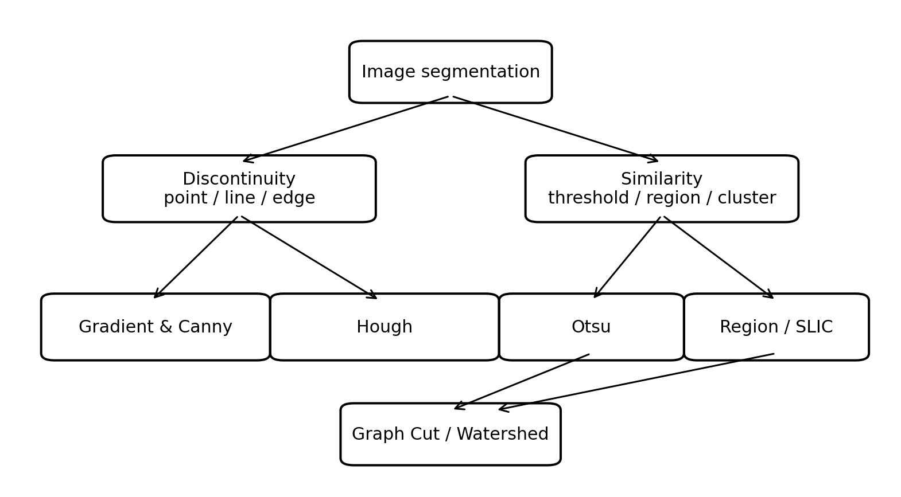
Fig. 39 نقشۀ مفهومی فصل: قطعهبندی از دو ایدۀ بنیادی «ناپیوستگی» و «شباهت» به خانوادههای لبه، آستانه، ناحیه، خوشه، گراف و آبخیز میرسد. این شکل برای همین فصل از نو طراحی شده است.#
اهداف یادگیری#
پس از مطالعۀ این فصل، انتظار میرود دانشجو بتواند تفاوت دیدگاههای مبتنی بر ناپیوستگی و شباهت را توضیح دهد؛ مشتقهای گسسته، گرادیان، لاپلاسین، LoG و مراحل Canny را از نظر ریاضی تفسیر کند؛ تبدیل هاف را در فضای پارامترها توضیح دهد؛ آستانۀ Otsu را از واریانس درونکلاسی و بینکلاسی استخراج کند؛ رشد ناحیه، تقسیم–ادغام، K-means، SLIC، برش گراف و Watershed را بهصورت الگوریتمی دنبال کند؛ و محدودیتها و پارامترهای اصلی هر روش را تشخیص دهد.
مبنای متن و تکمیل علمی
متن اصلی این صفحه از نسخۀ نهایی LaTeX پیوستشده توسط مدرس حفظ و به MyST Markdown تبدیل شده است. توضیحهای افزوده، شکلهای بازطراحیشده و منابع تکمیلی با برچسب یا عنوان مشخص از متن اصلی قابل تشخیصاند. شکلهای استخراجشده از کتاب در بستۀ سایت بازنشر نشدهاند و شکلهای اصیلِ آموزشی جایگزین شدهاند.
فایلهای اجرایی این فصل#
چرا قطعهبندی؟#
قطعهبندی یا Image Segmentation فرایند تقسیم تصویر به نواحی معنادار است. در فصلهای قبل، عملیات عمدتاً روی خود تصویر انجام میشد: بهبود کنتراست، فیلترکردن، تبدیل فوریه و مورفولوژی. در این فصل سؤال عوض میشود: «کدام پیکسلها به یک شیء یا ناحیه تعلق دارند؟» این تغییر، گذار از پردازش سطح پایین به تحلیل تصویر است.
هدف قطعهبندی تولید یک تصویر زیباتر نیست؛ هدف تولید یک نمایش ساختاری است. خروجی میتواند نقشۀ دودویی، مجموعهای از مرزها، یا یک تصویر برچسبدار باشد که در آن هر پیکسل شمارۀ ناحیۀ خود را دارد. کیفیت این مرحله روی اندازهگیری، تشخیص و طبقهبندی بعدی اثر مستقیم دارد.
برداشت مفهومی
دو خانوادۀ اصلی ایدهها در سراسر فصل تکرار میشوند: ۱) پیدا کردن ناپیوستگیها، مثل لبه؛ ۲) پیدا کردن شباهتها، مثل نواحی با شدت یا رنگ مشابه. بسیاری از الگوریتمها ترکیبی از این دو دیدگاهاند.
اگر دامنۀ تصویر را با \(R\) و نواحی را با \(R_1,\ldots,R_n\) نشان دهیم، یک قطعهبندی مطلوب باید کل تصویر را بپوشاند، نواحی جدا از هم باشند، هر ناحیه نسبت به یک ویژگی \(Q\) همگن باشد و ادغام نواحی مجاور همگنی را نقض کند: $\(\bigcup_{i=1}^n R_i=R,\qquad R_i\cap R_j=\varnothing\;(i\neq j),\qquad Q(R_i)=\mathrm{TRUE}.\)$
نقشۀ فصل#
این فصل مطابق سازمان کتاب از آشکارسازی نقطه، خط و لبه شروع میکند؛ سپس به آستانهگذاری، رشد/تقسیم/ادغام ناحیه، خوشهبندی و superpixel، برش گراف، آبخیز و در پایان استفاده از حرکت میرسد. بنابراین دانشجو باید بداند که فصل فقط «لبهیابی» نیست؛ لبهیابی تنها یکی از دروازههای ورود به مسئلۀ قطعهبندی است.
آشکارسازی نقطه، خط و لبه#
مشتق در تصویر گسسته: از تعریف ریاضی تا کرنل لاپلاسین#
یکی از مهمترین ایدهها در آشکارسازی لبه این است که لبه در تصویر، ناحیهای است که شدت روشنایی در آن بهسرعت تغییر میکند. بنابراین اگر بتوانیم «میزان تغییر شدت» را اندازه بگیریم، میتوانیم به محل لبهها برسیم. ابزار ریاضی طبیعی برای اندازهگیری تغییر، مشتق است.
اما یک تفاوت اساسی وجود دارد: در ریاضیات پیوسته، تابع در تمام نقاط تعریف شده است، درحالیکه تصویر دیجیتال فقط روی نقاط گسستۀ شبکۀ پیکسلها در دسترس است. بنابراین ابتدا باید ببینیم چگونه مفهوم مشتق را از حالت پیوسته به حالت گسسته منتقل میکنیم.
از مشتق پیوسته به تفاضل محدود#
برای یک تابع پیوستۀ یکبعدی \(f(x)\)، مشتق در نقطۀ \(x\) به صورت
تعریف میشود.
این رابطه میگوید مشتق، نرخ تغییر مقدار تابع نسبت به مکان است. هرچه تغییر \(f\) در یک فاصلۀ کوچک بزرگتر باشد، قدرمطلق مشتق نیز بزرگتر خواهد بود.
در یک تصویر دیجیتال نمیتوانیم \(\Delta x\) را به صفر میل دهیم، زیرا کوچکترین جابجایی قابل مشاهده برابر فاصلۀ بین دو پیکسل مجاور است. اگر فاصلۀ نمونهبرداری را یک واحد پیکسل در نظر بگیریم،
در نتیجه سادهترین تقریب مشتق برابر است با
به این تقریب، Forward Difference یا تفاضل پیشرو گفته میشود.
به همین ترتیب در راستای \(y\) داریم
بنابراین مشتق در تصویر دیجیتال در سادهترین شکل چیزی جز تفاضل شدت دو پیکسل مجاور نیست.
برداشت مفهومی
اگر دو پیکسل مجاور تقریباً شدت یکسانی داشته باشند، مشتق نزدیک صفر است. اگر شدت آنها بسیار متفاوت باشد، قدرمطلق مشتق بزرگ میشود. پس نواحی یکنواخت پاسخ کوچک و لبهها پاسخ بزرگ ایجاد میکنند.
یک مثال عددی ساده#
فرض کنید یک سطر از تصویر چنین مقادیر شدتی داشته باشد:
اگر تفاضل پیکسلهای مجاور را محاسبه کنیم، تقریب مشتق اول میشود
در قسمتهای یکنواخت، اختلاف دو پیکسل صفر است؛ اما در محل تغییر از \(10\) به \(80\)، مقدار بزرگی برابر \(70\) ظاهر میشود.
این دقیقاً همان چیزی است که از یک آشکارساز لبه انتظار داریم.
تفاضل پیشرو، پسرو و مرکزی#
تقریب مشتق اول منحصر به رابطۀ قبلی نیست. سه تقریب متداول عبارتاند از
و تفاضل مرکزی
تفاضل مرکزی از اطلاعات دو طرف نقطۀ مورد نظر استفاده میکند و از نظر تقارن، نمایش طبیعیتری از مشتق در نقطۀ مرکزی است.
اگر فاصلۀ واقعی نمونهبرداری برابر \(h\) باشد، رابطۀ دقیقتر تفاضل مرکزی به صورت
خواهد بود. در تصاویر دیجیتال معمولاً \(h=1\) پیکسل در نظر گرفته میشود.
چگونه مشتق اول به یک فیلتر تبدیل میشود؟#
رابطۀ
را میتوان به صورت اعمال ضرایب روی دو پیکسل مجاور نوشت. بنابراین یک کرنل ساده برای مشتق افقی میتواند به صورت
باشد.
برای تفاضل مرکزی نیز میتوان از
استفاده کرد.
پس مفهوم مهم این است که عمل مشتقگیری گسسته را میتوان به صورت یک فیلتر مکانی پیادهسازی کرد. کرنل روی تصویر حرکت میکند و در هر نقطه ترکیب وزندار پیکسلهای همسایه را محاسبه میکند.
همین ایده در ادامه به فیلترهای شناختهشدهای مانند Prewitt و Sobel منتهی میشود.
مشتق دوم از کجا میآید؟#
اکنون به مشتق دوم میرسیم. در حالت پیوسته داریم
یعنی مشتق دوم، مشتقِ مشتق اول است.
برای رسیدن به شکل گسسته، مشتق اول را با تفاضل دو نمونه تقریب میزنیم:
یک نمونه قبلتر نیز داریم
اکنون تغییر مشتق اول را محاسبه میکنیم:
با جایگذاری دو رابطۀ بالا:
پرانتزها را باز میکنیم:
این رابطه بسیار مهم است. توجه کنید که مشتق دوم در هر نقطه از سه نمونه استفاده میکند:
ضرایب آنها به ترتیب برابرند با
پس مشتق دوم یکبعدی را میتوان با کرنل
محاسبه کرد.
این همان پلی است که ما را از تعریف ریاضی مشتق دوم به یک فیلتر دیجیتال میرساند.
معنای شهودی مشتق دوم#
فرض کنید سه پیکسل متوالی چنین باشند:
مشتق دوم در پیکسل وسط برابر است با
پس در ناحیۀ ثابت پاسخ صفر است.
حال فرض کنید
داریم
بنابراین تغییر سریع شدت پاسخ بزرگی ایجاد میکند.
اما تفاوت مهم مشتق اول و دوم این است که مشتق دوم به تغییر شیب حساس است. به همین دلیل در اطراف یک لبه معمولاً مقادیر مثبت و منفی تولید میکند.
رفتار مشتق اول و دوم در یک لبۀ پلهای#
برای درک بهتر، سیگنال ایدهآل زیر را در نظر بگیرید:
مشتق اول تقریباً در محل تغییر یک پاسخ بزرگ ایجاد میکند:
حال اگر از این نتیجه دوباره مشتق بگیریم، مشتق دوم در دو طرف تغییر علامتهای مخالف ایجاد میکند:
بنابراین مشتق دوم معمولاً در یک طرف لبه مثبت و در طرف دیگر منفی است. محل عبور پاسخ از مثبت به منفی یا برعکس، Zero Crossing نامیده میشود و میتواند نشاندهندۀ محل لبه باشد.
نکتۀ تدریسی
روی تخته ابتدا یک تابع پلهای بکشید. زیر آن مشتق اول را رسم کنید که در محل تغییر یک قله دارد. سپس مشتق دوم را رسم کنید که در دو طرف لبه دو پاسخ با علامت مخالف ایجاد میکند. نقطۀ بین این دو پاسخ همان محل عبور از صفر است. این شکل ساده برای فهم Laplacian و بعداً LoG بسیار مهم است.
تعمیم مشتق دوم از سیگنال یکبعدی به تصویر دوبعدی#
تا اینجا فقط در راستای \(x\) حرکت میکردیم. اما تصویر تابعی دوبعدی است:
بنابراین تغییرات میتوانند هم در راستای افقی و هم در راستای عمودی رخ دهند.
مشتق دوم نسبت به \(x\) برابر است با
این رابطه فقط سه پیکسل افقی را بررسی میکند و میتوان آن را با کرنل
پیادهسازی کرد.
به همین ترتیب در راستای \(y\):
که کرنل متناظر آن
است.
پس \(H_x\) تغییرات مرتبۀ دوم در راستای افقی و \(H_y\) تغییرات مرتبۀ دوم در راستای عمودی را اندازه میگیرد.
رسیدن به لاپلاسین#
اگر فقط مشتق دوم در راستای \(x\) را بگیریم، نسبت به جهت حساس خواهیم بود. برای آنکه تغییرات دوبعدی را در هر دو راستای اصلی در نظر بگیریم، دو مشتق دوم را با هم جمع میکنیم.
عملگر Laplacian برای تصویر پیوسته به صورت
تعریف میشود.
اکنون تقریبهای گسسته را جایگذاری میکنیم:
با جمع کردن جملات:
این رابطه را باید با دقت نگاه کرد. برای محاسبۀ خروجی در پیکسل مرکزی:
پیکسل سمت راست با ضریب \(+1\)،
پیکسل سمت چپ با ضریب \(+1\)،
پیکسل بالا با ضریب \(+1\)،
پیکسل پایین با ضریب \(+1\)،
و خود پیکسل مرکزی با ضریب \(-4\)
وارد محاسبه میشوند.
پس این رابطه مستقیماً به ماتریس زیر تبدیل میشود:
این ماتریس همان کرنل چهارهمسایگی Laplacian است.
چرا دقیقاً عدد \(-4\) در مرکز ظاهر شد؟#
این عدد حفظی نیست.
از مشتق دوم در راستای \(x\)، ضریب پیکسل مرکزی برابر \(-2\) بود:
از مشتق دوم در راستای \(y\) نیز یک \(-2\) دیگر برای همان پیکسل مرکزی داریم. بنابراین
به همین دلیل با جمع دو کرنل
به
میرسیم.
برداشت مفهومی
بنابراین ماتریس لاپلاسین یک فرمول جادویی یا حفظی نیست. این ماتریس مستقیماً از تعریف مشتق دوم ساخته شده است:
اگر دانشجو این مسیر را بفهمد، دیگر لازم نیست کرنل لاپلاسین را حفظ کند.
مثال عددی دوبعدی#
فرض کنید همسایگی یک پیکسل به صورت زیر باشد:
کرنل لاپلاسین را روی آن قرار میدهیم:
خروجی در پیکسل مرکزی برابر است با
بنابراین
علامت منفی نشان میدهد که پیکسل مرکزی نسبت به ترکیب همسایههای اصلی خود رفتار متفاوتی دارد. در نواحی کاملاً یکنواخت، خروجی صفر خواهد بود.
برای مثال اگر تمام پیکسلها برابر \(50\) باشند،
پس لاپلاسین نواحی ثابت را حذف و تغییرات سریع شدت را برجسته میکند.
نسخۀ هشتهمسایگی لاپلاسین#
در کرنل قبلی فقط چهار همسایۀ بالا، پایین، چپ و راست شرکت داشتند. اگر چهار همسایۀ قطری را نیز وارد کنیم، کرنل به شکل
درمیآید.
در این حالت هشت همسایه هرکدام ضریب \(+1\) دارند، بنابراین برای آنکه مجموع ضرایب صفر باقی بماند، ضریب مرکز باید \(-8\) باشد.
مجموع ضرایب کرنل واقعاً صفر است:
صفر بودن مجموع ضرایب ویژگی مهم فیلترهای مشتقی است؛ زیرا اگر تصویر در یک ناحیه مقدار ثابت \(C\) داشته باشد،
یعنی ناحیۀ ثابت پاسخی ایجاد نمیکند.
در برخی منابع علامت تمام ضرایب برعکس انتخاب میشود؛ مثلاً
این دو قرارداد از نظر مکان آشکارسازی تغییرات معادلاند و فقط علامت پاسخ را عوض میکنند. هنگام ترکیب تصویر لاپلاسین با تصویر اصلی باید به این قرارداد علامت توجه کرد.
رابطۀ مشتق اول، گرادیان و مشتق دوم#
برای تصویر دوبعدی، مشتق اول به صورت بردار گرادیان نوشته میشود:
اندازۀ گرادیان
شدت تغییر را نشان میدهد.
پس میتوان تفاوت را چنین خلاصه کرد:
گرادیان علاوه بر شدت تغییر، اطلاعات جهت نیز دارد؛ اما لاپلاسین یک کمیت اسکالر است و جهت لبه را مستقیماً در اختیار ما قرار نمیدهد.
چرا مشتق به نویز حساس است؟#
فرض کنید شدت واقعی تصویر تقریباً ثابت باشد، اما به علت نویز مقادیر
ایجاد شده باشند. مشتقگیری اختلاف بین نمونههای مجاور را محاسبه میکند؛ بنابراین همین نوسانهای کوچک نیز پاسخ تولید میکنند.
این موضوع برای مشتق دوم شدیدتر است، زیرا مشتق دوم تغییرات مشتق اول را اندازه میگیرد. به بیان ساده، هرچه مرتبۀ مشتق بالاتر رود، حساسیت به تغییرات سریع و در نتیجه به نویز بیشتر میشود.
به همین علت در بسیاری از آشکارسازهای لبه ابتدا تصویر را هموار میکنند و سپس مشتق میگیرند. ایدۀ Laplacian of Gaussian (LoG) دقیقاً از همین موضوع ناشی میشود: ابتدا اثر نویز با هموارسازی گاوسی کاهش مییابد و سپس لاپلاسین برای یافتن تغییرات شدت محاسبه میشود.
آشکارسازی نقطه#
اصلاً منظور از «نقطه» چیست؟#
در اینجا منظور از نقطه، صرفاً یک پیکسل هندسی نیست. تمام تصویر از پیکسل تشکیل شده است؛ بنابراین اگر بگوییم «میخواهیم پیکسل پیدا کنیم»، معنای خاصی ندارد.
منظور از نقطۀ منفرد یا Isolated Point پیکسلی است که شدت آن به طور محسوسی با پیکسلهای اطرافش تفاوت دارد.
برای مثال، دو همسایگی زیر را در نظر بگیرید:
در همسایگی \(A\)، پیکسل مرکزی هیچ ویژگی خاصی ندارد. مقدار آن \(50\) است و تمام همسایهها نیز مقدار \(50\) دارند.
اما در \(B\)، پیکسل مرکزی مقدار \(200\) دارد، درحالیکه تمام اطراف آن تقریباً \(50\) هستند.
بنابراین پیکسل مرکزی در \(B\) یک نقطۀ روشن منفرد است.
به همین ترتیب،
دارای یک نقطۀ تاریک منفرد در مرکز است.
پس مسئلۀ آشکارسازی نقطه را میتوان چنین بیان کرد:
آیا پیکسل مرکزی به طور غیرعادی با محیط اطراف خود متفاوت است؟
چرا بحث آشکارسازی نقطه بعد از مشتق آمده است؟#
در بخش قبل دیدیم که مشتق به تغییرات شدت حساس است.
در یک ناحیۀ یکنواخت مانند
تغییر قابل توجهی وجود ندارد.
اما اگر فقط یک پیکسل متفاوت باشد،
هنگامی که از اطراف به مرکز میرسیم، شدت ناگهان افزایش مییابد و بلافاصله پس از عبور از مرکز دوباره کاهش پیدا میکند.
یعنی در فاصلۀ بسیار کوتاهی دو تغییر شدید داریم:
این دقیقاً حالتی است که یک عملگر مشتقی، بهخصوص مشتق دوم، به آن پاسخ قوی میدهد.
به همین دلیل میتوان از ایدۀ لاپلاسین که در بخش قبل آموختیم برای آشکارسازی نقاط منفرد استفاده کرد.
استفاده از لاپلاسین برای آشکارسازی نقطه#
کرنل هشتهمسایگی لاپلاسین را در نظر بگیرید:
این ماسک را روی تصویر حرکت میدهیم.
در هر مکان، مقدار خروجی \(R(x,y)\) از ضرب ضرایب ماسک در پیکسلهای متناظر و جمع آنها به دست میآید.
اگر همسایگی را به صورت
بنویسیم، پاسخ ماسک برابر است با
پیکسل \(z_5\) همان پیکسل مرکزی است که میخواهیم بررسی کنیم.
اگر ناحیه یکنواخت باشد چه اتفاقی میافتد؟#
فرض کنید تمام پیکسلها مقدار \(50\) داشته باشند:
پاسخ ماسک میشود
بنابراین
این نتیجه بسیار مهم است:
برداشت مفهومی
اگر پیکسل مرکزی شبیه محیط اطراف خود باشد، پاسخ آشکارساز نقطه تقریباً صفر است.
حال یک نقطۀ روشن قرار دهیم#
اکنون تصویر کوچک زیر را در نظر بگیرید:
ماسک همان است:
هشت همسایه هرکدام مقدار \(50\) دارند. بنابراین مجموع سهم آنها برابر است با
سهم پیکسل مرکزی نیز برابر است با
پس
قدر مطلق پاسخ بسیار بزرگ است:
بنابراین متوجه میشویم که در این مکان اتفاق غیرعادی افتاده است.
اگر نقطه تاریک باشد چه؟#
حال فرض کنید زمینۀ تصویر روشن و پیکسل مرکزی تاریک باشد:
پاسخ برابر است با
یعنی
باز هم
پس هم نقطۀ روشن روی زمینۀ تاریک و هم نقطۀ تاریک روی زمینۀ روشن قابل آشکارسازی هستند.
فقط علامت پاسخ آنها متفاوت است.
معنای علامت پاسخ#
با قرارداد ماسک
داریم:
اگر فقط بخواهیم بدانیم «آیا یک نقطۀ غیرعادی وجود دارد یا نه»، معمولاً علامت برای ما مهم نیست و قدرمطلق پاسخ را بررسی میکنیم:
از پاسخ فیلتر چگونه تصمیم میگیریم؟#
در تصویر واقعی پاسخ دقیقاً صفر یا \(1200\) نخواهد بود، زیرا نویز، بافت و تغییرات طبیعی شدت نیز وجود دارند.
بنابراین یک آستانه \(T\) تعیین میکنیم و میگوییم:
در این رابطه:
\(R(x,y)\) پاسخ فیلتر در نقطۀ \((x,y)\) است؛
\(T\) آستانۀ تصمیم است؛
\(g(x,y)=1\) یعنی نقطۀ مورد نظر آشکار شده است؛
\(g(x,y)=0\) یعنی آن مکان نقطۀ منفرد محسوب نمیشود.
نکتۀ تدریسی
برای تدریس این قسمت، بهتر است ابتدا اصلاً فرمول ننویسید.
روی تخته این دو ماتریس را کنار هم بکشید:
از دانشجو بپرسید:
«اگر بخواهیم با یک عدد بگوییم پیکسل وسط چقدر با محیطش متفاوت است، چه کاری میتوانیم انجام دهیم؟»
پاسخ طبیعی این است که مقدار مرکز را با اطراف مقایسه کنیم.
بعد ماسک لاپلاسین را نشان دهید و محاسبۀ
را انجام دهید.
در این صورت دانشجو میفهمد ماسک چرا کار میکند، به جای اینکه فقط یک ماتریس \(3\times3\) را حفظ کند.
تفاوت نقطه و لبه#
این تفاوت برای ادامۀ فصل بسیار مهم است.
در نقطۀ منفرد، تغییر شدت در یک ناحیۀ بسیار کوچک و تقریباً در تمام جهتهای اطراف پیکسل اتفاق میافتد:
اما در لبه، تغییر شدت در امتداد یک مرز ادامه پیدا میکند. مثلاً:
در مثال دوم دیگر یک نقطۀ منفرد نداریم؛ یک مرز عمودی بین ناحیۀ تیره و روشن داریم.
بنابراین:
در بخش بعد خواهیم دید که برای آشکارسازی خطوط و لبهها، ساختار و جهت همسایگی نیز اهمیت پیدا میکند.
پرسش کلاسی / امتحانی
در تصویر زیر
پاسخ ماسک
را در پیکسل مرکزی محاسبه کنید.
سپس توضیح دهید چرا بزرگ بودن قدرمطلق این پاسخ میتواند نشاندهندۀ وجود یک نقطۀ منفرد باشد.
آشکارسازی خط#
در بخش قبل دیدیم که یک نقطۀ منفرد را میتوان به دلیل تفاوت شدید آن با همسایگی اطرافش آشکار کرد. اکنون یک ساختار پیچیدهتر را در نظر میگیریم: خط.
منظور از خط در یک تصویر دیجیتال چیست؟#
برای شروع، تصویر دودویی زیر را در نظر بگیرید:
در این تصویر، ستون وسط یک خط عمودی روشن روی زمینۀ تاریک است.
حال تصویر دیگری را در نظر بگیرید:
این بار یک خط افقی داریم.
بنابراین برخلاف «نقطۀ منفرد»، در آشکارسازی خط فقط متفاوت بودن یک پیکسل از اطراف کافی نیست. پیکسلهای متفاوت باید یک آرایش جهتدار تشکیل دهند.
این کلمۀ «جهت» اساس آشکارسازی خط است.
برداشت مفهومی
در آشکارسازی نقطه میپرسیدیم:
اما در آشکارسازی خط میپرسیم:
چرا ماسک آشکارساز خط باید جهتدار باشد؟#
همسایگی زیر را در نظر بگیرید:
واضح است که ردیف وسط نسبت به بالا و پایین روشنتر است. بنابراین یک خط افقی از مرکز این همسایگی عبور میکند.
اگر بخواهیم ماشینی این وضعیت را تشخیص دهیم، باید به پیکسلهای ردیف وسط وزن مثبت و به پیکسلهای بالا و پایین وزن منفی بدهیم.
مثلاً:
اکنون پاسخ فیلتر برابر است با
برای مثال فوق:
پس
پاسخ بسیار بزرگ است؛ بنابراین شواهد قوی برای وجود یک خط افقی داریم.
چرا ضرایب ماسک برابر \(2\) و \(-1\) انتخاب شدهاند؟#
این ضرایب را نباید صرفاً حفظ کرد.
ماسک
دو کار انجام میدهد.
اول، به جهت مورد نظر وزن مثبت بیشتری میدهد. برای خط افقی، این جهت همان ردیف وسط است.
دوم، مجموع ضرایب ماسک صفر است:
این ویژگی بسیار مهم است.
اگر ناحیهای کاملاً یکنواخت باشد، مثلاً
پاسخ ماسک برابر خواهد بود با
پس آشکارساز به یک ناحیۀ ثابت پاسخ نمیدهد.
اما اگر ردیف وسط متفاوت باشد، تعادل ضرایب از بین میرود و پاسخ بزرگی ایجاد میشود.
برداشت مفهومی
بنابراین این ماسک در واقع سؤال زیر را میپرسد:
اگر پاسخ مثبت باشد، احتمال وجود یک خط افقی زیاد است.
ساخت آشکارسازهای جهتدار#
اکنون همان ایده را برای جهتهای مختلف به کار میبریم.
برای خط افقی:
برای یکی از جهتهای قطری:
برای خط عمودی:
و برای قطر دیگر:
در هر ماسک، ضرایب \(2\) در راستایی قرار گرفتهاند که قرار است آشکار شود.
بنابراین شکل خود ماسک به ما میگوید به چه جهتی حساس است.
یک مثال: چرا آشکارساز افقی به خط عمودی پاسخ ضعیفتری میدهد؟#
فرض کنید همسایگی شامل یک خط عمودی روشن باشد:
اگر ماسک افقی
را اعمال کنیم، سهم ستون روشن در ضرایب مثبت و منفی پخش میشود و پاسخ قوی مخصوص خط افقی ایجاد نمیشود.
اما اگر ماسک عمودی
را اعمال کنیم، هر سه پیکسل روشن دقیقاً روی ضرایب \(2\) قرار میگیرند.
بنابراین پاسخ بسیار بزرگتری خواهیم داشت.
پس ماسکها صرفاً تغییر شدت را آشکار نمیکنند؛ بلکه آرایش مکانی تغییرات شدت را نیز بررسی میکنند.
بانک آشکارسازهای جهتدار#
حال فرض کنید از قبل نمیدانیم خط موجود در تصویر چه جهتی دارد.
در این صورت تصویر را با هر چهار ماسک فیلتر میکنیم:
علامت \(*\) در اینجا نشاندهندۀ اعمال فیلتر مکانی است.
در هر پیکسل چهار پاسخ داریم:
اکنون بزرگترین قدرمطلق پاسخ را انتخاب میکنیم:
جهت متناظر با این بیشینه نیز تخمینی از جهت ساختار محلی است:
مثلاً اگر
میگوییم ساختار محلی در این نقطه بیشتر شبیه یک خط \(45^\circ\) است.
نکتۀ تدریسی
در اینجا اصطلاح «بانک فیلتر» را برای دانشجو روشن کنید.
بانک فیلتر چیز پیچیدهای نیست. یک تصویر واحد را به چند آشکارساز مختلف میدهیم:
هر فیلتر یک سؤال متفاوت میپرسد:
آیا اینجا خط افقی وجود دارد؟
آیا اینجا خط عمودی وجود دارد؟
آیا اینجا خط \(45^\circ\) وجود دارد؟
آیا اینجا خط \(-45^\circ\) وجود دارد؟
چهار پاسخ را با هم مقایسه میکنیم و پاسخ بزرگتر نشان میدهد ساختار محلی بیشتر با کدام جهت سازگار است.
از پاسخ فیلتر تا تصمیم نهایی#
وجود یک پاسخ بزرگ به تنهایی کافی نیست. معمولاً آستانهای مانند \(T\) تعریف میکنیم:
اگر فقط به یک جهت خاص علاقهمند باشیم، مثلاً خطوط عمودی، نیازی به اجرای هر چهار آشکارساز نیست و میتوانیم بنویسیم
به این ترتیب فقط نقاطی باقی میمانند که پاسخ قوی به آشکارساز عمودی دارند.
یک محدودیت بسیار مهم: منظور از خط در این روش، خط باریک است#
ماسکهای \(3\times3\) فوق برای ساختارهایی طراحی شدهاند که نسبت به اندازۀ ماسک باریک باشند.
برای فهم مسئله، یک خط ضخیم را در نظر بگیرید:
اگر ماسک کوچک کاملاً داخل بخش روشن خط قرار گیرد، از دید ماسک آن ناحیه تقریباً یکنواخت است.
بنابراین ممکن است پاسخ در مرکز خط کوچک یا حتی صفر شود.
در این حالت بهتر است ساختار را یک «ناحیۀ باریک» بدانیم که دارای دو لبه است و ابتدا لبههای آن را آشکار کنیم.
برداشت مفهومی
پس آشکارساز خط محلی را نباید با یک آشکارساز عمومی برای هر نوع خط اشتباه گرفت.
ماسکهای \(3\times3\) برای یافتن ساختار خطی باریک و محلی بسیار قابل فهم و مفیدند، اما برای یافتن یک خط بلند، شکسته یا دارای نویز، روش دیگری لازم است.
از آشکارسازی محلی خط تا تبدیل هاف#
ماسکهای جهتدار میتوانند در یک همسایگی کوچک نشان دهند که آیا ساختاری شبیه بخشی از یک خط وجود دارد یا خیر. اما این پاسخ هنوز محلی است. در بسیاری از مسائل میخواهیم بدانیم آیا تعداد زیادی از نقاط پراکندۀ تصویر را میتوان با یک خط هندسی واحد توضیح داد.
فرض کنید پس از آشکارسازی لبه، مجموعهای از نقاط $\(\mathcal{E}=\{P_i=(x_i,y_i)\}_{i=1}^{N_E}\)$ در اختیار داریم. مسئله این است که از میان این نقاط، خط یا خطهای موجود در تصویر را پیدا کنیم.
یک مثال عددی ساده از هاف در فضای کارتزین \((a,b)\)#
قبل از ورود به نمایش \((\rho,\theta)\)، بهتر است ایدۀ تبدیل هاف را با معادلۀ آشنای خط
ببینیم.
در این بخش برای سادگی، خطهای کاملاً عمودی را در نظر نمیگیریم؛ زیرا برای خط عمودی شیب \(a\) نامتناهی میشود. هدف فعلاً فقط فهم ایدۀ فضای پارامترها است.
فرض کنید سه نقطۀ زیر در تصویر پیدا شدهاند:
میخواهیم ببینیم آیا این سه نقطه روی یک خط مشترک قرار دارند و اگر چنین است، پارامترهای آن خط یعنی \(a\) و \(b\) چیست.
نقطۀ اول#
برای نقطۀ
معادلۀ خط
باید برقرار باشد. بنابراین
پس
این رابطه بسیار مهم است.
یک نقطه در صفحۀ \(xy\) به تنهایی یک خط مشخص نمیکند؛ بینهایت خط میتواند از آن عبور کند.
مثلاً اگر
داریم
و خط
از نقطۀ \(P_1\) عبور میکند.
اگر
آنگاه
و خط
نیز از همان نقطه عبور میکند.
اگر
داریم
و خط
نیز از همان نقطه عبور میکند.
پس نقطۀ
در فضای پارامترهای \((a,b)\) به رابطۀ
تبدیل میشود.
یعنی:
نقطۀ دوم#
اکنون نقطۀ
را در نظر میگیریم.
از
داریم
بنابراین
پس در فضای \((a,b)\)، نقطۀ دوم نیز یک خط ایجاد میکند:
تقاطع دو خط در فضای پارامترها#
اکنون دو رابطه داریم:
و
اگر دو نقطۀ \(P_1\) و \(P_2\) روی یک خط مشترک باشند، باید یک زوج \((a,b)\) وجود داشته باشد که هر دو رابطه را همزمان ارضا کند.
پس دو عبارت \(b\) را برابر قرار میدهیم:
بنابراین
حال مقدار \(a=2\) را در یکی از روابط قرار میدهیم:
پس
بنابراین نقطۀ تقاطع دو خط در فضای پارامترها برابر است با
این زوج پارامتر دقیقاً یک خط در صفحۀ اصلی تصویر را مشخص میکند:
نقطۀ سوم چه میکند؟#
حال نقطۀ سوم را بررسی میکنیم:
از
داریم
پس
اکنون پارامترهایی را که قبلاً پیدا کردیم امتحان میکنیم:
داریم
پس
یعنی خط سوم در فضای \((a,b)\) نیز از همان نقطۀ
عبور میکند.
بنابراین هر سه نقطۀ تصویر
از یک خط مشترک پشتیبانی میکنند:
معنای هندسی مثال#
در صفحۀ اصلی \(xy\) سه نقطه داشتیم:
اما در فضای پارامترهای \((a,b)\)، هر نقطه به یک خط تبدیل شد:
هر سه خط در نقطۀ
به یکدیگر میرسند.
این نقطه در فضای پارامترها یعنی:
بنابراین در صفحۀ تصویر خط متناظر عبارت است از
خلاصۀ بسیار مهم#
و
یعنی
برداشت مفهومی
این مثال کل ایدۀ تبدیل هاف را نشان میدهد:
یک نقطۀ تصویر یک خط در فضای پارامترها تولید میکند.
اگر چند نقطۀ تصویر روی یک خط مشترک باشند، خطهای متناظر آنها در فضای پارامترها در یک نقطۀ مشترک به هم میرسند.
مختصات آن نقطه همان پارامترهای خط است.
در این مثال:
و بنابراین خط اصلی
است.
نمایش خط در فضای پارامترها#
نمایش آشنای خط $\(y=mx+b\)\( برای خطهای نزدیک به عمودی مناسب نیست، زیرا در آن حالت \)\(m\rightarrow\infty.\)\( به همین دلیل در تبدیل هاف از نمایش نرمال استفاده میکنیم: \)\(\boxed{\rho=x\cos\theta+y\sin\theta.}\)$ در این رابطه:
\(\rho\) فاصلۀ عمود از مبدأ تا خط است؛
\(\theta\) زاویۀ بردار عمود بر خط با محور مرجع است.
اگر $$\mathbf{n}=
=
\begin{bmatrix}
\dfrac{\partial f}{\partial x}\\[3mm]
\dfrac{\partial f}{\partial y}
\end{bmatrix}
}$$
که به آن بردار گرادیان میگوییم.
گرادیان واقعاً چه معنای هندسی دارد؟#
گرادیان فقط کنار هم گذاشتن دو مشتق نیست. این بردار یک خاصیت هندسی بسیار مهم دارد:
گرادیان در جهت بیشترین افزایش شدت روشنایی قرار دارد.
برای اینکه دلیل این جمله روشن شود، یک جهت دلخواه را در صفحۀ تصویر در نظر بگیرید.
بردار واحد در زاویۀ \(\phi\) را میتوان نوشت:
اکنون میخواهیم بدانیم اگر از نقطۀ \((x,y)\) کمی در جهت \(\mathbf{u}\) حرکت کنیم، شدت با چه سرعتی تغییر میکند.
این کمیت را مشتق جهتی مینامیم:
برای تابع دوبعدی داریم:
بنابراین
چرا جهت گرادیان جهت بیشترین تغییر است؟#
فرض کنید اندازۀ گرادیان برابر \(M\) و زاویۀ آن برابر \(\alpha\) باشد.
پس میتوان گرادیان را به صورت
نوشت.
مشتق جهتی در جهت \(\phi\) میشود:
بنابراین
با استفاده از رابطۀ مثلثاتی
داریم:
اکنون معنی هندسی گرادیان کاملاً روشن میشود.
برای مشاهدهٔ عددی و هندسی این نتیجه، در پیوست [app:gradient-directional-derivative]{reference-type=”ref” reference=”app:gradient-directional-derivative”} تابع دوبعدی
بررسی شده است. در نقطۀ \(P_0=(1,1)\)، گرادیان، اندازۀ آن و مشتق جهتی برای تمام جهتهای ممکن محاسبه میشوند. شکل [fig:gradient-geometry-app]{reference-type=”ref” reference=”fig:gradient-geometry-app”} نشان میدهد که بردار گرادیان بر منحنی هممقدار عبوری از نقطه عمود است، و شکل [fig:directional-derivative-angle-app]{reference-type=”ref” reference=”fig:directional-derivative-angle-app”} به طور عددی نشان میدهد که مشتق جهتی دقیقاً در \(\phi=\alpha\) بیشینه، در جهتهای عمود بر گرادیان صفر و در جهت مخالف گرادیان کمینه میشود.
بیشترین مقدار \(\cos(\phi-\alpha)\) برابر 1 است و هنگامی رخ میدهد که
پس
و تغییر شدت بیشینه است.
یعنی:
در جهت مخالف گرادیان،
داریم
یعنی در این جهت بیشترین کاهش شدت رخ میدهد.
و اگر
باشد،
یعنی در جهت عمود بر گرادیان، در تقریب موضعی شدت تغییر نمیکند.
اندازۀ گرادیان#
اندازۀ بردار گرادیان از رابطۀ طول بردار دوبعدی به دست میآید:
این مقدار بسیار مهم است.
اگر
باشد، شدت در اطراف آن نقطه تقریباً ثابت است.
اگر
بزرگ باشد، شدت در آن محل به سرعت تغییر میکند.
از آنجا که لبهها محل تغییر سریع شدت هستند، اندازۀ گرادیان را میتوان به عنوان معیاری برای قدرت لبه در نظر گرفت:
بنابراین با محاسبۀ \(M(x,y)\) برای تمام پیکسلها، یک تصویر جدید با همان اندازۀ تصویر اولیه به دست میآید که معمولاً آن را تصویر اندازۀ گرادیان یا Gradient Magnitude Image مینامیم.
در این تصویر معمولاً نواحی تقریباً یکنواخت تیرهاند و مکان تغییرات شدید شدت روشنتر ظاهر میشود.
جهت گرادیان#
از مؤلفههای
میتوان جهت بردار گرادیان را نیز محاسبه کرد.
در شکل ساده مینویسیم:
اما در پیادهسازی عددی بهتر است از تابع دوورودی
استفاده شود.
علت آن است که رابطۀ
به تنهایی نمیتواند ربع زاویه را به طور مطمئن مشخص کند و هنگامی که
باشد نیز تقسیم بر صفر ایجاد میشود.
تابع atan2 علامت هر دو مؤلفه را بررسی میکند و جهت صحیح بردار را تعیین میکند.
یک مثال عددی ساده#
فرض کنید در نقطهای از تصویر محاسبه کردهایم:
پس بردار گرادیان
است.
اندازۀ آن:
و جهت آن:
پس در این نقطه سریعترین افزایش شدت در جهت تقریباً
رخ میدهد و نرخ این افزایش برابر
است.
اگر در جهت مخالف حرکت کنیم، بیشترین کاهش شدت را خواهیم داشت.
اگر در جهت
حرکت کنیم، تغییر شدت در تقریب موضعی صفر است.
چرا گرادیان بر لبه عمود است؟#
این نکته یکی از مهمترین مفاهیم آشکارسازی لبه است.
یک لبۀ ایدهآل را تصور کنید که دو ناحیه با شدتهای متفاوت را از هم جدا میکند.
اگر در امتداد خود لبه حرکت کنیم، تا زمانی که روی همان مرز حرکت میکنیم شدت تغییر زیادی نمیکند.
اما اگر عمود بر لبه حرکت کنیم، از یک ناحیۀ شدت به ناحیۀ دیگر وارد میشویم؛ بنابراین تغییر شدت بیشینه است.
از طرف دیگر میدانیم گرادیان در جهت بیشترین تغییر شدت قرار دارد.
پس:
اگر جهت گرادیان
باشد، یکی از نمایشهای جهت هندسی لبه برابر است با
که البته زاویههای خطوط به پیمانۀ \(180^\circ\) معادلاند.
یعنی
تفسیر دیگر: خطوط همشدت#
این موضوع را میتوان از دید دیگری نیز فهمید.
فرض کنید مجموعهای از نقاط تصویر دارای شدت ثابت \(c\) باشند:
این نقاط یک منحنی همشدت یا Level Curve تشکیل میدهند.
اگر روی این منحنی حرکت کنیم، مقدار \(f\) ثابت میماند. بنابراین مشتق جهتی در راستای مماس بر منحنی صفر است.
اگر بردار مماس را \(\mathbf t\) بنامیم:
دو بردار که ضرب داخلی آنها صفر است بر یکدیگر عمودند. بنابراین
لبۀ موضعی نیز تقریباً مانند یک منحنی همشدت یا مرز تغییر شدت رفتار میکند. به همین دلیل گرادیان بردار نرمال لبه است.
به همین علت در برخی متون به گرادیان در محل لبه Edge Normal نیز گفته میشود.
علامت گرادیان چه اطلاعاتی میدهد؟#
اندازۀ گرادیان
همیشه نامنفی است و فقط قدرت تغییر را نشان میدهد.
اما خود مؤلفههای \(g_x\) و \(g_y\) علامت دارند.
برای مثال اگر در راستای \(x\)
باشد، با حرکت در جهت مثبت \(x\)، شدت افزایش مییابد.
اگر
باشد، شدت کاهش مییابد.
پس دو لبه با قدرت مساوی، یکی از تاریک به روشن و دیگری از روشن به تاریک، میتوانند اندازۀ گرادیان یکسان ولی جهت گرادیان مخالف داشته باشند.
بنابراین:
در حالی که
تقریب سریع اندازۀ گرادیان#
محاسبۀ دقیق اندازۀ گرادیان نیازمند توان دوم، جمع و جذر است:
در برخی پیادهسازیها برای کاهش هزینۀ محاسبات از تقریب
استفاده میشود.
این کمیت دقیقاً برابر طول اقلیدسی بردار نیست، اما معمولاً تغییرات نسبی قدرت لبه را به خوبی حفظ میکند.
برای مثال اگر
اندازۀ دقیق برابر است با
در حالی که تقریب سریع میدهد:
پس مقدار عددی تغییر کرده است، اما همچنان نقطهای با مؤلفههای گرادیان بزرگ، پاسخ بزرگی خواهد داشت.
در نتیجه اگر هدف اصلی مقایسۀ قدرت لبهها یا آستانهگذاری باشد، این تقریب در برخی کاربردها مفید است.
گرادیان در تصویر گسسته#
تمام روابط بالا برای تابع پیوستۀ
نوشته شدند. اما تصویر دیجیتال فقط در مختصات صحیح نمونهبرداری شده است.
پس مشتق واقعی در دسترس نیست و باید آن را با تفاضل محدود تقریب بزنیم.
برای مثال میتوان نوشت:
و
یا از تفاضل مرکزی استفاده کرد:
پس در تصویر دیجیتال، گرادیان در عمل از دو فیلتر مشتقگیر به دست میآید:
سپس از این دو تصویر، دو تصویر دیگر میسازیم:
و
بنابراین برای هر پیکسل چهار کمیت مرتبط داریم:
از تفاضل ساده تا ماسکهای Prewitt و Sobel#
تفاضل دو پیکسل نسبت به نویز حساس است. به همین دلیل معمولاً مشتق را با استفاده از یک همسایگی، مثلاً \(3\times3\)، تخمین میزنیم.
یکی از سادهترین انتخابها اپراتور Prewitt است. با قرارداد متداول محورهای تصویر، دو ماسک را میتوان به صورت
نوشت.
پس
اپراتور Sobel به پیکسلهای مرکزی وزن بیشتری میدهد:
وزنهای
مقداری هموارسازی نیز ایجاد میکنند و به همین دلیل Sobel معمولاً نسبت به تفاضل بسیار ساده رفتار مناسبتری در حضور نویز دارد.
برداشت مفهومی
به ماسک \(H_x\) و \(H_y\) نباید فقط به عنوان دو ماتریس حفظی نگاه کرد.
هرکدام در اصل میپرسند:
«شدت دو طرف این نقطه در یک جهت مشخص چقدر با هم فرق دارد؟»
پاسخ این دو پرسش، دو مؤلفۀ بردار گرادیان را تشکیل میدهد.
یک نکتۀ بسیار مهم در نامگذاری جهت#
بین سه مفهوم باید تفاوت گذاشت:
و
دو مورد اول یکساناند، ولی مورد سوم \(90^\circ\) با آنها اختلاف دارد.
برای مثال اگر گرادیان افقی باشد، تغییر شدت در جهت افقی اتفاق افتاده است. پس مرزی که این تغییر را ایجاد کرده معمولاً عمودی است.
به زبان ساده:
و برعکس:
این نکته هنگام تفسیر خروجی Sobel، Canny و روشهای اتصال لبه بسیار مهم است.
نویز و گرادیان#
گرادیان از مشتق مرتبه اول ساخته میشود و مشتق نسبت به تغییرات سریع حساس است.
نویز نیز معمولاً شامل تغییرات سریع شدت در مقیاس کوچک است. بنابراین مشتق میتواند نویز را تقویت کند.
به همین علت در بسیاری از آشکارسازهای لبه ابتدا تصویر را هموار میکنیم و سپس گرادیان را محاسبه میکنیم:
برای مثال در آشکارساز Canny ابتدا هموارسازی گاوسی انجام میشود و بعد اندازۀ گرادیان و جهت آن محاسبه میشوند.
پس یک اصل مهم در آشکارسازی لبه این است:
و در نتیجه
میتواند پایداری آشکارسازی را افزایش دهد.
خلاصۀ مفهومی گرادیان#
در هر نقطۀ تصویر:
یک بردار است.
طول آن:
شدت یا قدرت تغییر را نشان میدهد.
زاویۀ آن:
جهت بیشترین افزایش شدت را نشان میدهد.
و جهت امتداد لبه تقریباً برابر است با
بنابراین:
نکتۀ تدریسی
برای توضیح گرادیان روی تخته، یک مرز عمودی بکشید که سمت چپ آن تیره و سمت راست آن روشن باشد.
ابتدا از دانشجو بپرسید:
«اگر در امتداد عمودی این مرز حرکت کنیم، شدت چقدر تغییر میکند؟»
پاسخ: تقریباً هیچ.
سپس بپرسید:
«اگر از چپ به راست از مرز عبور کنیم چه میشود؟»
پاسخ: شدت به سرعت تغییر میکند.
پس جهت بیشترین تغییر افقی است و بردار گرادیان افقی خواهد بود، در حالی که خود لبه عمودی است.
با همین مثال، رابطۀ
بدون حفظ کردن فرمول قابل فهم میشود.
پرسش کلاسی / امتحانی
در نقطهای از یک تصویر داریم
اندازۀ گرادیان را به دست آورید.
زاویۀ گرادیان را محاسبه کنید.
جهت تقریبی امتداد لبه را تعیین کنید.
توضیح دهید چرا جهت لبه و جهت گرادیان یکسان نیستند.
اگر هر دو مؤلفۀ گرادیان دو برابر شوند، اندازۀ گرادیان چه تغییری میکند و جهت آن چه تغییری میکند؟
ماسکهای Roberts، Prewitt و Sobel#
هر سه روش تقریب مشتق اولاند. تفاوت اصلی در هندسه و وزندهی همسایگی است. Sobel به دلیل وزن ۲ در سطر/ستون مرکزی، اندکی هموارسازی را همراه با مشتقگیری انجام میدهد. ماسکهای متداول Sobel: $\(G_x=\begin{bmatrix}-1&-2&-1\\0&0&0\\1&2&1\end{bmatrix},\qquad G_y=\begin{bmatrix}-1&0&1\\-2&0&2\\-1&0&1\end{bmatrix}.\)\( نامگذاری \)x\( و \)y$ ممکن است در منابع با قرارداد چرخیده دیده شود؛ آنچه مهم است فهم راستای تغییر است.

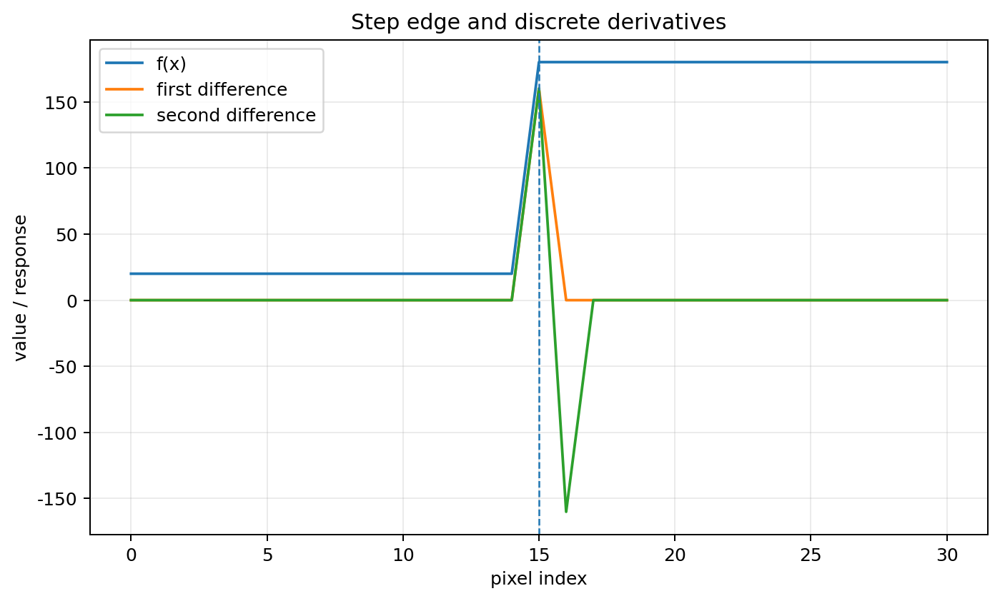
Fig. 40 نمونۀ اصیل از یک لبۀ پلهای و پاسخ تفاضل اول و دوم. پاسخ مشتق اول در محل تغییر شدت بزرگ میشود و مشتق دوم در دو سوی گذار تغییر علامت میدهد.#
لاپلاسین#
لاپلاسین مشتق دوم دوبعدی است: $\(\nabla^2 f=\frac{\partial^2f}{\partial x^2}+\frac{\partial^2f}{\partial y^2}.\)\( یک ماسک متداول: \)\(\begin{bmatrix}0&1&0\\1&-4&1\\0&1&0\end{bmatrix}\)\( و نوع هشتهمسایگی: \)\(\begin{bmatrix}1&1&1\\1&-8&1\\1&1&1\end{bmatrix}.\)$ لاپلاسین جهت لبه را نمیدهد و نسبت به نویز حساس است، اما برای تعیین گذر از صفر و ساخت آشکارسازهای دقیق مفید است.
هموارسازی گاوسی و LoG#
برای کاهش حساسیت مشتق دوم به نویز، ابتدا تصویر با گاوسی هموار و سپس لاپلاسین گرفته میشود. این دو عمل را میتوان در فیلتر Laplacian of Gaussian (LoG) ترکیب کرد: $\(h(x,y)=-\frac{1}{\pi\sigma^4}\left[1-\frac{x^2+y^2}{2\sigma^2}\right] \exp\left[-\frac{x^2+y^2}{2\sigma^2}\right].\)\( پارامتر \)\sigma\( مقیاس را کنترل میکند: \)\sigma\( کوچک جزئیات ریز و نویز را نگه میدارد؛ \)\sigma$ بزرگ ساختارهای درشتتر را برجسته میکند.
اعمال لاپلاسین روی تصویر هموارشده#
پس از هموارسازی، مشتق دوم تصویر را با عملگر لاپلاسین محاسبه میکنیم:
اما
پس
از خطی بودن مشتق و کانولوشن میتوان مشتق را روی خود کرنل گاوسی اعمال کرد:
این نتیجه بسیار مهم است.
یعنی دو مرحلۀ
را میتوان به صورت یک مرحلۀ فیلترکردن نوشت:
تابع
را Laplacian of Gaussian یا به اختصار LoG مینامیم.
استخراج ریاضی رابطۀ LoG#

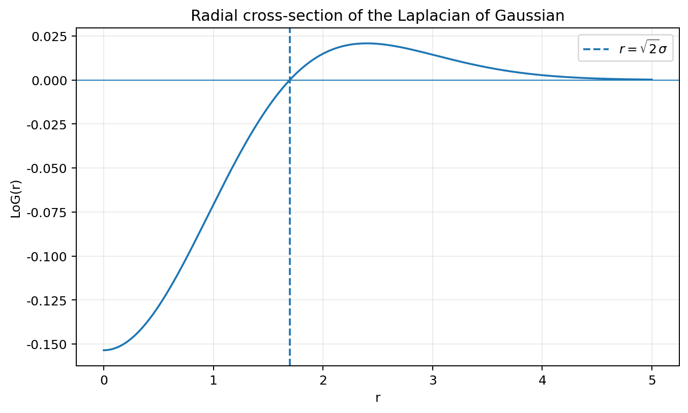
Fig. 41 مقطع شعاعی LoG برای یک \(\sigma\) نمونه. عبور از صفر در \(r=\sqrt{2}\sigma\) نشان میدهد چرا پاسخ LoG در اطراف ساختارها تغییر علامت میدهد.#
از گاوسی نرمالشده شروع میکنیم:
برای کوتاهشدن روابط، تعریف میکنیم
و بنابراین
مشتق اول نسبت به \(x\)#
ابتدا نسبت به \(x\) مشتق میگیریم:
مشتق عبارت داخل توان برابر است با
پس
ولی عبارت
همان \(G(x,y)\) است. بنابراین
مشتق دوم نسبت به \(x\)#
اکنون دوباره نسبت به \(x\) مشتق میگیریم:
با استفاده از قاعدۀ مشتق حاصلضرب:
از رابطۀ قبلی
استفاده میکنیم:
پس
مشتق دوم نسبت به \(y\)#
کاملاً مشابه داریم
تشکیل لاپلاسین#
تعریف لاپلاسین در دو بعد:
پس
جملات را جمع میکنیم:
بنابراین
اکنون مقدار خود \(G\) را جایگذاری میکنیم:
پس
حال صورت را به شکل دیگری مینویسیم:
بنابراین
با سادهسازی:
این همان تابع Laplacian of Gaussian است.
رابطۀ نهایی چه چیزی به ما میگوید؟#
رابطۀ LoG از سه بخش تشکیل شده است:
بخش نمایی باعث میشود اثر فیلتر با دورشدن از مرکز کاهش یابد.
عامل
باعث میشود پاسخ در یک شعاع مشخص علامت عوض کند.
برای یافتن محل تغییر علامت کافی است بنویسیم
بنابراین
اگر
باشد:
و در نتیجه
پس LoG در اطراف مرکز یک ناحیۀ یکعلامت و در بیرون آن ناحیهای با علامت مخالف دارد و مرز بین آنها در شعاع
قرار میگیرد.
این تغییر علامت منشأ شکل معروف Mexican Hat در نمایش سهبعدی LoG است.
نقش LoG در آشکارسازی لبه#
اگر تصویر را با LoG فیلتر کنیم:
در محلهایی که شدت تقریباً ثابت است، پاسخ تقریباً صفر خواهد بود.
در اطراف یک تغییر شدت، پاسخ مشتق دوم معمولاً در یک طرف لبه یک علامت و در طرف دیگر علامت مخالف دارد.
بنابراین محل لبه را میتوان از عبور از صفر یا Zero Crossing پاسخ LoG پیدا کرد:
پس کل مسیر آشکارسازی به صورت
است.
و به دلیل خطی بودن مشتق و کانولوشن میتوان همان مسیر را به صورت
پیادهسازی کرد.
برداشت مفهومی
نقش دو بخش LoG را جداگانه به خاطر بسپارید:
و
پس LoG در واقع تلاش میکند دو خواستۀ متضاد را با هم جمع کند: پیش از مشتقگیری نویز را کاهش دهد، اما پس از آن تغییرات مهم شدت را آشکار کند.
آشکارساز Canny: منطق مرحلهبهمرحله#
Canny را بهتر است یک «زنجیرۀ تصمیم» بدانیم نه یک ماسک واحد. مراحل اصلی عبارتاند از: هموارسازی گاوسی، محاسبۀ گرادیان، نازکسازی با nonmaximum suppression، آستانهگذاری دوگانه و اتصال لبهها با hysteresis.
در nonmaximum suppression، مقدار گرادیان فقط وقتی نگه داشته میشود که در راستای گرادیان از دو همسایۀ خود بزرگتر باشد. نتیجه، لبههای تقریباً یکپیکسلی است. سپس دو آستانه \(T_H\) و \(T_L\) داریم: نقاط بالاتر از \(T_H\) لبۀ قوی، بین دو آستانه لبۀ ضعیف، و پایینتر از \(T_L\) حذف میشوند. لبۀ ضعیف تنها وقتی باقی میماند که به لبۀ قوی متصل باشد.

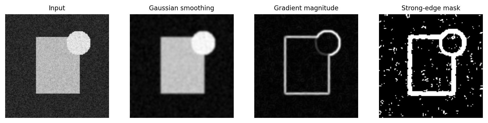
Fig. 42 آزمایش بازتولیدپذیر روی تصویر مصنوعی: ورودی نویزی، هموارسازی گاوسی، اندازۀ گرادیان و ماسک لبههای قوی. شکل برای توضیح منطق زنجیرۀ Canny بازطراحی شده است.#
آستانهگذاری#
ایدۀ پایه#
اگر هیستوگرام تصویر شامل دو جمعیت نسبتاً جدا، مثلاً شیء و زمینه، باشد میتوان با آستانه \(T\) تصویر را دودویی کرد: $\(g(x,y)=\begin{cases} 1,&f(x,y)>T\\ 0,&f(x,y)\le T. \end{cases}\)$ این سادهترین شکل قطعهبندی است. اما موفقیت آن وابسته به جدایی آماری کلاسها و یکنواختی روشنایی است.

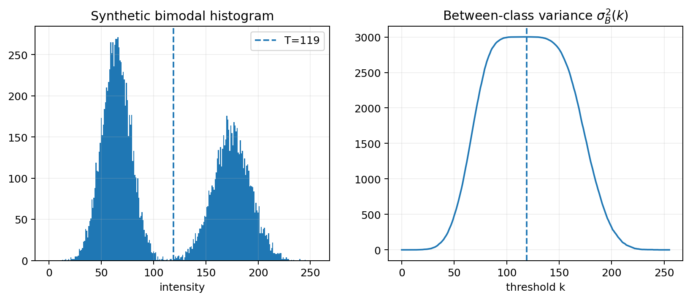
Fig. 43 هیستوگرام دومدی مصنوعی و واریانس بینکلاسی Otsu. خطچین آستانهای را نشان میدهد که \(\sigma_B^2(k)\) را بیشینه میکند.#
آستانۀ سراسری و آستانۀ متغیر#
در آستانۀ سراسری یک \(T\) برای کل تصویر داریم. اگر روشنایی زمینه در نقاط مختلف تغییر کند، یک آستانه کافی نیست. در آستانهگذاری محلی یا تطبیقی، \(T=T(x,y)\) و از آمار همسایگی مانند میانگین، میانه یا انحراف معیار محلی استفاده میشود.
اثر نویز و روشنایی نامساوی#
دو عامل کلاسیک شکست آستانهگذاری، نویز و سایه/گرادیان روشناییاند. نویز پهنای قلههای هیستوگرام را افزایش میدهد و همپوشانی کلاسها را بیشتر میکند. روشنایی نامساوی نیز ممکن است یک شیء واحد را در بخشهای مختلف به دو کلاس متفاوت ببرد. پیشپردازش هموارسازی و تصحیح زمینه میتواند مسئله را ساده کند.
آستانهگذاری تکراری#
یک روش ساده این است که ابتدا \(T\) حدس زده شود، پیکسلها به دو گروه تقسیم شوند، میانگین گروهها \(\mu_1,\mu_2\) محاسبه و آستانۀ جدید برابر $\(T_{new}=\frac{\mu_1+\mu_2}{2}\)\( قرار داده شود. این روند تا کوچک شدن تغییر \)T$ ادامه مییابد.
روش Otsu: مبنای آماری و استخراج کامل روابط#
روش Otsu یک روش آستانهگذاری سراسری است که آستانه را مستقیماً از هیستوگرام تصویر تعیین میکند.
ایدهٔ اصلی آن این است که با انتخاب یک آستانه، پیکسلهای تصویر را به دو کلاس تقسیم کنیم، به گونهای که:
و در عین حال
این ایده از نظر آماری به دو بیان معادل منجر میشود:
یا
روش Otsu معمولاً از بیان دوم استفاده میکند.
هیستوگرام به عنوان توزیع احتمال شدت#
فرض کنید تصویر دارای \(L\) سطح شدت باشد:
برای یک تصویر 8 بیتی:
اگر \(n_i\) تعداد پیکسلهایی باشد که شدت آنها برابر \(i\) است و تعداد کل پیکسلها برابر
باشد، هیستوگرام نرمالشده را به صورت
تعریف میکنیم.
پس
و
بنابراین میتوان \(p_i\) را احتمال تجربی مشاهدهٔ شدت \(i\) در تصویر دانست.
تقسیم تصویر به دو کلاس با آستانه \(k\)#
یک آستانهٔ کاندید \(k\) را در نظر میگیریم:
آنگاه دو کلاس تشکیل میشوند:
و
احتمال تعلق یک پیکسل به کلاس اول:
و برای کلاس دوم:
پس
در واقع \(P_1\) و \(P_2\) فقط نشان میدهند چه سهمی از کل پیکسلها در هر کلاس قرار گرفته است.
میانگین شدت هر کلاس#
میانگین شدت کلاس اول برابر است با
به همین ترتیب برای کلاس دوم:
این روابط فقط زمانی معنی دارند که
زیرا در غیر این صورت یکی از کلاسها خالی خواهد بود.
از تعریف \(m_1(k)\) داریم
و چون
نتیجه میشود
پس
این همان خاصیت معروف میانگین است: مجموع انحرافها از میانگین، با وزن احتمالها، صفر است.
برای کلاس دوم نیز دقیقاً داریم
میانگین کل تصویر#
میانگین کل شدتهای تصویر برابر است با
چون تمام پیکسلهای تصویر یا در کلاس اولاند یا در کلاس دوم، میتوان این مجموع را به دو قسمت تقسیم کرد:
ولی
و
پس
یعنی میانگین کل تصویر، میانگین وزندار میانگین دو کلاس است.
واریانس هر کلاس#
واریانس شدت در کلاس اول برابر است با
بنابراین با ضرب دو طرف در \(P_1\):
به همین ترتیب:
و بنابراین
پس \(P_1\sigma_1^2\) سهم کلاس اول از پراکندگی داخلی و \(P_2\sigma_2^2\) سهم کلاس دوم از پراکندگی داخلی است.
واریانس درونکلاسی#
واریانس درونکلاسی را به صورت
تعریف میکنیم.
یعنی:
این کمیت میگوید اعضای هر کلاس تا چه اندازه حول میانگین همان کلاس پراکندهاند.
اگر آستانه مناسب باشد، انتظار داریم هر کلاس نسبتاً همگن باشد و در نتیجه
کوچک شود.
بنابراین از یک دیدگاه میتوان آستانهٔ مطلوب را چنین تعریف کرد:
واریانس کل تصویر#
واریانس کل تصویر نسبت به میانگین سراسری \(m_G\) برابر است با
این مقدار فقط به خود تصویر بستگی دارد و به انتخاب آستانه وابسته نیست.
اکنون مجموع را به دو کلاس تقسیم میکنیم:
برای فهم روش Otsu باید ببینیم هر یک از این دو قسمت چگونه تجزیه میشود.
سهم کلاس اول در واریانس کل#
برای کلاس اول داریم
برای ارتباط دادن \(m_G\) با میانگین خود کلاس، \(m_1\) را داخل عبارت اضافه و کم میکنیم:
پس
با بسط مربع:
اکنون برای تمام شدتهای کلاس اول جمع میکنیم:
جملهٔ میانی صفر است، زیرا قبلاً نشان دادیم:
پس:
ولی
و
بنابراین:
این رابطه معنای بسیار روشنی دارد.
سهم کلاس اول در واریانس کل از دو قسمت تشکیل شده است:
که نشاندهندهٔ پراکندگی اعضای کلاس اول حول میانگین خود کلاس است،
و
که نشان میدهد میانگین کلاس اول تا چه اندازه از میانگین کل تصویر فاصله دارد.
پس:
سهم کلاس دوم در واریانس کل#
کاملاً مشابه کلاس اول داریم:
تجزیهٔ اصلی واریانس#
اکنون دو سهم را با هم جمع میکنیم:
دو جملهٔ اول همان واریانس درونکلاسیاند:
دو جملهٔ بعدی را واریانس بینکلاسی تعریف میکنیم:
پس به رابطۀ بنیادی میرسیم:
این رابطه اساس ریاضی روش Otsu است.
معنای واریانس بینکلاسی#
رابطهٔ
میگوید میانگین هر کلاس چه اندازه از میانگین کل تصویر فاصله دارد.
اگر دو کلاس تقریباً یک میانگین داشته باشند، یعنی
جدایی آنها ضعیف است.
در مقابل، اگر دو میانگین از یکدیگر فاصله زیادی داشته باشند، جدایی دو کلاس زیاد است.
پس \(\sigma_B^2\) معیاری از جدایی کلاسها است.
چرا بیشینهکردن واریانس بینکلاسی معادل کمینهکردن واریانس درونکلاسی است؟#
از رابطۀ
داریم
از آنجا که
برای تصویر ثابت است، هرچه
بزرگتر شود،
کوچکتر خواهد شد.
بنابراین:
روش Otsu از صورت دوم استفاده میکند.
استخراج رابطۀ معروف Otsu#
اکنون میخواهیم
را ساده کنیم.
میدانیم
پس
ولی
بنابراین:
به طور مشابه:
چون
داریم:
اکنون این دو رابطه را در \(\sigma_B^2\) قرار میدهیم:
پس:
عامل مشترک میگیریم:
ولی
بنابراین:
این همان رابطۀ مشهور روش Otsu است.
تفسیر رابطۀ نهایی#
رابطۀ
دو جزء مهم دارد.
جزء اول:
فاصلهٔ میانگین دو کلاس را اندازه میگیرد.
هرچه
بزرگتر باشد، جدایی شدت دو کلاس بیشتر است.
جزء دوم:
به اندازهٔ نسبی کلاسها مربوط است.
اگر یکی از کلاسها تقریباً خالی باشد، مثلاً
آنگاه
پس حتی اگر دو میانگین ظاهراً دور باشند، چنین تقسیمبندیای امتیاز زیادی نخواهد گرفت.
بنابراین Otsu فقط فاصلۀ میانگینها را زیاد نمیکند، بلکه وزن آماری دو کلاس را نیز در نظر میگیرد.
فرمول محاسباتی سریع#
برای پیادهسازی بهتر است برای هر آستانه \(m_1\) و \(m_2\) را از ابتدا محاسبه نکنیم.
میانگین تجمعی را تعریف میکنیم:
در این صورت
از طرف دیگر:
پس
اکنون:
با مخرج مشترک:
چون
داریم
پس:
با جایگذاری در رابطۀ واریانس بینکلاسی:
به دست میآید:
و چون
میتوان نوشت:
این فرم برای پیادهسازی بسیار مناسب است.
انتخاب آستانۀ بهینه#
برای تمام آستانههای ممکن مقدار
را محاسبه میکنیم و آستانهای را انتخاب میکنیم که این مقدار را بیشینه کند:
فقط مقادیری معتبرند که
پس از یافتن \(k^\star\)، تصویر دودویی به صورت
تشکیل میشود.
مثال عددی ساده#
Fig. 44 مثال تصویری مکمل: بیشینۀ واریانس بینکلاسی با آستانۀ انتخابی Otsu متناظر است.#
فرض کنید تصویر فقط شش سطح شدت داشته باشد:
و هیستوگرام آن به صورت زیر باشد:
تعداد کل پیکسلها:
پس:
میانگین کل:
اکنون آستانۀ \(k=2\) را در نظر میگیریم.
کلاس اول:
و کلاس دوم:
احتمال کلاس اول:
پس:
میانگین کلاس اول:
میانگین کلاس دوم:
پس:
بنابراین:
و در نتیجه:
اگر همین محاسبه برای تمام آستانهها انجام شود:
بیشترین مقدار برای
به دست میآید.
پس آستانۀ Otsu در این مثال برابر 2 است.
ضریب جدایی#
میتوان کیفیت جدایی کلاسها را با نسبت
نیز بیان کرد.
از آنجا که
داریم
مقدار نزدیک صفر نشاندهندۀ جدایی ضعیف و مقدار نزدیک یک نشاندهندۀ جدایی قویتر دو کلاس است.
یک سوءبرداشت رایج#
روش Otsu مستقیماً درۀ بین دو قلۀ هیستوگرام را پیدا نمیکند.
معیار واقعی آن
است.
در تصاویر دارای دو مد مشخص، آستانۀ حاصل اغلب در نزدیکی درۀ بین دو مد قرار میگیرد، اما این نتیجهٔ بیشینهشدن جدایی آماری دو کلاس است، نه جستوجوی مستقیم کمارتفاعترین نقطۀ هیستوگرام.
شرایط مناسب و محدودیتها#
روش Otsu هنگامی عملکرد خوبی دارد که بتوان تصویر را با یک آستانۀ سراسری به دو گروه نسبتاً متمایز تقسیم کرد.
این روش ممکن است در شرایط زیر عملکرد ضعیفتری داشته باشد:
روشنایی در سراسر تصویر یکنواخت نباشد؛
توزیع شدت دو کلاس همپوشانی زیادی داشته باشد؛
نویز شدید باشد؛
یکی از کلاسها نسبت به دیگری بسیار کوچک باشد؛
تصویر ذاتاً بیش از دو کلاس مهم داشته باشد.
در چنین شرایطی، تصحیح روشنایی، هموارسازی، آستانهگذاری محلی یا روشهای چندآستانهای میتوانند مناسبتر باشند.
الگوریتم نهایی#
مراحل روش Otsu را میتوان چنین خلاصه کرد:
هیستوگرام نرمالشده را محاسبه کنید:
\[p_i=\frac{n_i}{N}.\]میانگین کل را محاسبه کنید:
\[m_G = \sum_{i=0}^{L-1}i\,p_i.\]برای هر آستانه \(k\)، محاسبه کنید:
\[P_1(k) = \sum_{i=0}^{k}p_i\]و
\[m(k) = \sum_{i=0}^{k}i\,p_i.\]اگر
\[P_1(k)=0 \qquad\text{یا}\qquad P_1(k)=1,\]آن آستانه را نادیده بگیرید.
واریانس بینکلاسی را محاسبه کنید:
\[\sigma_B^2(k) = \frac{ [m_GP_1(k)-m(k)]^2 }{ P_1(k)[1-P_1(k)] }.\]آستانهای را انتخاب کنید که
\[\sigma_B^2(k)\]را بیشینه کند.
در نتیجه:
برداشت مفهومی
مبنای ریاضی روش Otsu در رابطۀ زیر خلاصه میشود:
و چون واریانس کل تصویر ثابت است:
برای دو کلاس:
پس آستانۀ Otsu آستانهای است که کلاسهای حاصل را از نظر شدت تا حد ممکن از یکدیگر جدا میکند.
ارتباط با روشهای آستانهگذاری محلی#
روش استاندارد Otsu یک آستانۀ سراسری تولید میکند:
اما میتوان همین معیار را در همسایگیهای محلی نیز اعمال کرد.
در این حالت برای هر ناحیه یک هیستوگرام محلی ساخته میشود و آستانۀ Otsu همان ناحیه محاسبه میشود.
پس آستانه به تابعی از مکان تبدیل میشود:
این روش برای تصاویری با روشنایی غیر یکنواخت میتواند مناسبتر باشد، هرچند هزینۀ محاسباتی بیشتری دارد.
تعمیم به چند آستانه#
ایدهٔ واریانس بینکلاسی به بیش از دو کلاس نیز قابل تعمیم است.
اگر \(K\) کلاس داشته باشیم، با احتمالهای
و میانگینهای
آنگاه
در این حالت باید چند آستانه را همزمان انتخاب کنیم تا این معیار بیشینه شود.
با افزایش تعداد کلاسها، تعداد ترکیبهای ممکن آستانهها سریع افزایش مییابد و مسئله محاسباتی دشوارتر میشود.
پیچیدگی محاسباتی#
پس از تشکیل هیستوگرام، لازم نیست تمام پیکسلها برای هر آستانه دوباره بررسی شوند.
برای تصویر 8 بیتی فقط
سطح شدت وجود دارد.
پس بعد از محاسبۀ هیستوگرام، جستوجوی آستانه روی حداکثر 256 سطح انجام میشود.
اگر \(N\) تعداد پیکسلها باشد، تشکیل هیستوگرام دارای مرتبهٔ
و جستوجوی آستانه دارای مرتبهٔ
است.
بنابراین پیچیدگی کلی را میتوان تقریباً
در نظر گرفت.
قطعهبندی ناحیهای#
ایدهٔ بنیادی قطعهبندی ناحیهای#
در روشهای مبتنی بر لبه، ابتدا نقاطی را پیدا میکنیم که در آنها شدت تصویر به سرعت تغییر میکند و سپس تلاش میکنیم این نقاط را به مرزهای معنادار تبدیل کنیم. در قطعهبندی ناحیهای، دیدگاه برعکس است:
فرض کنید کل ناحیهٔ مکانی تصویر را با \(R\) نمایش دهیم. هدف قطعهبندی آن است که \(R\) را به زیرناحیههای
تقسیم کنیم، به گونهای که هر زیرناحیه از نظر معیار مورد نظر همگن باشد و دو ناحیهٔ مجاور را نتوان بدون از دست رفتن این همگنی با یکدیگر ادغام کرد.
از دید ریاضی، یک قطعهبندی مطلوب معمولاً شرایط زیر را ارضا میکند:
یعنی هیچ پیکسلی از تصویر بدون برچسب باقی نماند،
یعنی هر پیکسل فقط به یک ناحیه تعلق داشته باشد، و هر \(R_i\) نیز باید یک مجموعهٔ متصل باشد.
اگر \(Q(R)\) یک گزارهٔ منطقی برای بیان همگنی ناحیه باشد، انتظار داریم
برای همهٔ ناحیههای نهایی برقرار باشد. همچنین اگر \(R_i\) و \(R_j\) دو ناحیهٔ مجاور نهایی باشند، معمولاً باید
باشد؛ زیرا در غیر این صورت میشد آنها را نیز با یکدیگر ادغام کرد.
این روابط، اساس ریاضی بسیاری از الگوریتمهای رشد ناحیه، تقسیم–ادغام، خوشهبندی و روشهای گرافی را تشکیل میدهند.
همسایگی و اتصال#
شباهت شدت به تنهایی برای تشکیل یک ناحیه کافی نیست. دو پیکسل ممکن است شدت یکسان داشته باشند، ولی در دو قسمت کاملاً جدا از تصویر قرار گرفته باشند. بنابراین مفهوم اتصال جزء جداییناپذیر قطعهبندی ناحیهای است.
برای پیکسل
همسایگی چهارگانه را به صورت
تعریف میکنیم.
در اتصال هشتگانه، چهار همسایهٔ قطری نیز افزوده میشوند:
در نتیجه، ناحیه فقط مجموعهای از پیکسلهای مشابه نیست؛ بلکه مجموعهای از پیکسلهای مشابه و متصل است.
برداشت مفهومی
اگر شرط اتصال را حذف کنیم، ممکن است تمام پیکسلهای خاکستری با مقدار مثلاً \(100\)، هرچند در نقاط پراکندهٔ تصویر باشند، یک ناحیه محسوب شوند. این نتیجه از دید هندسی معمولاً بیمعنی است.
رشد ناحیه#
Region Growing یکی از روشنترین روشهای قطعهبندی ناحیهای است. ایدهٔ آن بسیار ساده است:
هر نقطهٔ شروع را یک بذر یا Seed مینامیم. سه جزء اصلی الگوریتم عبارتاند از انتخاب بذر، تعریف معیار شباهت، و تعریف همسایگی و قاعدهٔ توقف.
سادهترین معیار شباهت#
فرض کنید تصویر خاکستری با \(f(x,y)\) نمایش داده شود و بذر
باشد. سادهترین معیار این است که پیکسل \(p\) پذیرفته شود اگر شدت آن به شدت بذر نزدیک باشد:
در این رابطه \(T\) تلرانس مجاز است. اگر \(T\) خیلی کوچک باشد، ناحیه ممکن است ناقص باقی بماند. اگر \(T\) خیلی بزرگ باشد، رشد میتواند از مرز جسم عبور کند و وارد ناحیههای ناخواسته شود.
الگوریتم ساده و روشن رشد ناحیه#
برای یک بذر و اتصال چهارگانه، رویهٔ عملی را میتوان چنین نوشت:
بذر \(s\) را انتخاب کنید.
ناحیه را با \(R=\{s\}\) مقداردهی اولیه کنید.
همسایههای بذر را در یک صف قرار دهید.
اولین پیکسل \(p\) را از صف بردارید.
اگر \(p\) قبلاً بررسی نشده و $\(|f(p)-f(s)|\leq T\)\( باشد، آن را به \)R$ اضافه کنید.
اگر \(p\) پذیرفته شد، همسایههای بررسینشدهٔ آن را نیز به صف اضافه کنید.
مراحل 4 تا 6 را تا زمانی ادامه دهید که صف خالی شود.
پس الگوریتم فقط در امتداد پیکسلهای پذیرفتهشده حرکت میکند. در نتیجه حتی اگر در نقطهای دور از تصویر پیکسلی با شدت مناسب وجود داشته باشد، تا زمانی که مسیر متصلی از پیکسلهای پذیرفتنی به آن نرسیده باشد، عضو ناحیه نمیشود.
مثال عددی کامل از رشد ناحیه#

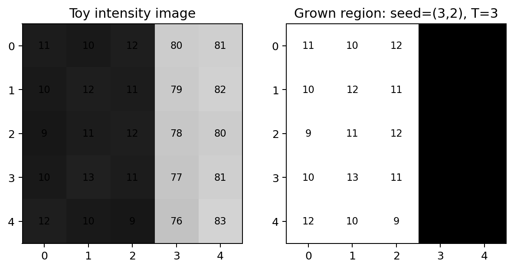
Fig. 45 تصویر عددی و ماسک ناحیۀ رشدکرده برای مثال آموزشی متن. شرط شباهت به تنهایی کافی نیست و اتصال مکانی نیز باید برقرار باشد.#
تصویر کوچک زیر را در نظر بگیرید:
بذر را پیکسل سطر سوم و ستون دوم انتخاب میکنیم:
فرض کنید اتصال چهارگانه و آستانه
باشد. پس هر پیکسلی که به صورت متصل به ناحیه برسد و شرط
را ارضا کند، پذیرفته میشود. یعنی بازهٔ مجاز شدتها
است.
در ابتدا
چهار همسایهٔ آن عبارتاند از
شدت آنها به ترتیب
است و هر چهار مقدار شرط شباهت را ارضا میکنند. پس به ناحیه افزوده میشوند.
از این پیکسلها دوباره به همسایههایشان میرویم. این فرایند ادامه پیدا میکند و تمام پیکسلهای سه ستون اول به ناحیه متصل میشوند.
اما هنگامی که رشد به ستون چهارم میرسد، مقادیری مانند
دیده میشوند و مثلاً
پس این پیکسلها رد میشوند و رشد از آن مرز عبور نمیکند.
ماسک نهایی ناحیه برابر است با
این مثال نشان میدهد که رشد ناحیه در واقع ترکیب دو شرط است:
نسخهٔ تطبیقی: مقایسه با میانگین ناحیه#
مقایسه با مقدار ثابت بذر همیشه بهترین انتخاب نیست. ممکن است شدت جسم به آرامی تغییر کند. در چنین حالتی معیار مناسبتر آن است که پیکسل جدید با میانگین فعلی ناحیه مقایسه شود:
و پیکسل هنگامی پذیرفته شود که
اگر ناحیه در حال حاضر \(n\) پیکسل و میانگین \(\mu_R\) داشته باشد و پیکسل جدید با شدت \(f(p)\) پذیرفته شود، میانگین جدید از رابطهٔ
به دست میآید.
این روش میتواند تغییر آرام شدت داخل جسم را بهتر دنبال کند. اما چون \(\mu_R\) پس از هر پذیرش تغییر میکند، ترتیب بررسی پیکسلها ممکن است روی نتیجه اثر بگذارد.
رشد رقابتی چند ناحیه#
اگر چند بذر
داشته باشیم، میتوان \(K\) ناحیه را همزمان رشد داد.
برای هر پیکسل مرزی \(p\) و ناحیه \(R_k\)، یک فاصله تعریف میکنیم:
در نسخهٔ سادهٔ رقابتی، پیکسلی انتخاب میشود که کمترین فاصله را با یکی از ناحیهها داشته باشد:
سپس
بعد از افزودن پیکسل، میانگین آن ناحیه بهروز میشود و فرایند ادامه پیدا میکند. در عمل، یک Priority Queue میتواند کاندیداها را بر حسب مقدار \(d(p,R_k)\) مرتب کند. این دیدگاه به خانوادهٔ Seeded Region Growing نزدیک است.
انتخاب بذر و قاعدهٔ توقف#
بذرها میتوانند توسط کاربر، آستانهگذاری اولیه، مینیممها یا ماکزیممهای محلی، مراکز خوشهها، یا اطلاعات قبلی از شکل و محل جسم انتخاب شوند.
قاعدهٔ پایهٔ توقف این است:
اما در مسائل واقعی میتوان شروط دیگری نیز افزود؛ مثلاً
یا محدودیت روی شکل، کشیدگی، بافت یا رنگ.
انتخاب خودکار بذر با استفاده از Mean Shift#
در روش رشد ناحیه، یکی از مسائل مهم انتخاب بذرهای مناسب است. اگر محل ناحیههای مورد نظر از قبل معلوم نباشد، میتوان از یک روش خوشهبندی ناپارامتری مانند Mean Shift برای یافتن نواحی پرتراکم در فضای ویژگی استفاده کرد و از آنها برای تولید بذرهای اولیه بهره گرفت.
Mean Shift مستقیماً تعداد خوشهها را از قبل تعیین نمیکند. ایدۀ آن این است که نقاط فضای ویژگی به سمت بیشینههای محلی چگالی، که مد نامیده میشوند، حرکت کنند.
برای یک تصویر خاکستری میتوان هر پیکسل را، علاوه بر شدت، با مختصات مکانی آن نمایش داد. برای مثال:
که در آن \(h_s\) پهنای باند مکانی و \(h_r\) پهنای باند شدت است.
در یک بیان ساده، اگر \(\mathbf y^{(t)}\) مکان فعلی یک نقطه در فضای ویژگی باشد، بهروزرسانی Mean Shift با یک کرنل گاوسی را میتوان به صورت
نوشت که در آن
بنابراین در هر تکرار، نقطه به سمت میانگین وزندار نقاط پرتراکم اطراف خود حرکت میکند.
بردار جابهجایی
را بردار Mean Shift مینامیم.
تکرار تا زمانی ادامه پیدا میکند که تغییر بسیار کوچک شود:
نقطۀ نهایی تقریباً یک مد چگالی در فضای ویژگی است.
اگر تعداد زیادی از پیکسلها به یک مد یا مدهای بسیار نزدیک همگرا شوند، میتوان آنها را متعلق به یک گروه مشابه در نظر گرفت. ناحیههای متصل و پایدار حاصل از این خوشهبندی میتوانند به عنوان ناحیههای کاندید برای استخراج بذرهای رشد ناحیه استفاده شوند.
به صورت مفهومی:
مزیت این روش آن است که انتخاب بذر صرفاً به یک مقدار شدت از پیش تعیینشده وابسته نیست و میتواند ساختار واقعی توزیع ویژگیهای تصویر را در نظر بگیرد.
برداشت مفهومی
باید بین دو قاعدۀ توقف تفاوت گذاشت.
در Mean Shift تکرار زمانی متوقف میشود که جابهجایی در فضای ویژگی بسیار کوچک شود:
اما پس از تعیین بذرها، توقف خودِ الگوریتم رشد ناحیه همچنان بر اساس قاعدۀ رشد است:
بنابراین معیار همگرایی Mean Shift را نباید با قاعدۀ توقف Region Growing یکی دانست.
نشت ناحیه#
یکی از مشکلات مشهور رشد ناحیه، Leakage است. اگر در مرز جسم شکافی با شدت مشابه داخل جسم وجود داشته باشد، رشد ممکن است از آن شکاف عبور کند و وارد زمینه شود.
راههای متداول کاهش این مشکل عبارتاند از هموارسازی ملایم تصویر، استفاده از میانگین جاری ناحیه، محدودکردن رشد با نقشهٔ گرادیان، استفاده از چند بذر رقابتی، و اعمال محدودیت اندازه یا شکل.
تقسیم و ادغام ناحیهها#
در رشد ناحیه از ناحیههای کوچک شروع میکنیم و آنها را بزرگ میکنیم. روش Region Splitting and Merging از جهت مخالف نیز استفاده میکند:
گزارهٔ همگنی#
برای هر ناحیه \(R\)، یک گزاره \(Q(R)\) تعریف میکنیم. یک مثال ساده:
یعنی ناحیه هنگامی همگن تلقی میشود که دامنهٔ تغییر شدت داخل آن از \(T\) بیشتر نباشد.
معیار دیگر میتواند واریانس باشد:
مرحلهٔ تقسیم#
از کل تصویر \(R\) شروع میکنیم. اگر
نیازی به تقسیم نیست. اگر
ناحیه را به چهار ربع تقسیم میکنیم. هر ربعی که هنوز شرط همگنی را نقض کند دوباره به چهار قسمت تقسیم میشود. ساختار حاصل یک Quadtree است.
مرحلهٔ ادغام#
تقسیم صرف معمولاً تعداد زیادی بلوک کوچک تولید میکند. پس بعد از تقسیم، ناحیههای مجاور \(R_i\) و \(R_j\) را بررسی میکنیم. اگر
آن دو را ادغام میکنیم. فرایند تا زمانی ادامه پیدا میکند که هیچ ادغام جدیدی ممکن نباشد.
الگوریتم سادهٔ تقسیم–ادغام#
با کل تصویر به عنوان یک ناحیه شروع کنید.
هر ناحیهای را که \(Q(R)=\mathrm{FALSE}\) است به چهار قسمت تقسیم کنید.
مرحلهٔ قبل را تا رسیدن به ناحیههای همگن یا حداقل اندازه ادامه دهید.
ناحیههای مجاور را بررسی کنید.
اگر اتحاد دو ناحیه شرط \(Q\) را ارضا کرد، آنها را ادغام کنید.
مراحل ادغام را تا زمانی ادامه دهید که هیچ ادغام جدیدی رخ ندهد.
مثال عددی سادهٔ تقسیم–ادغام#

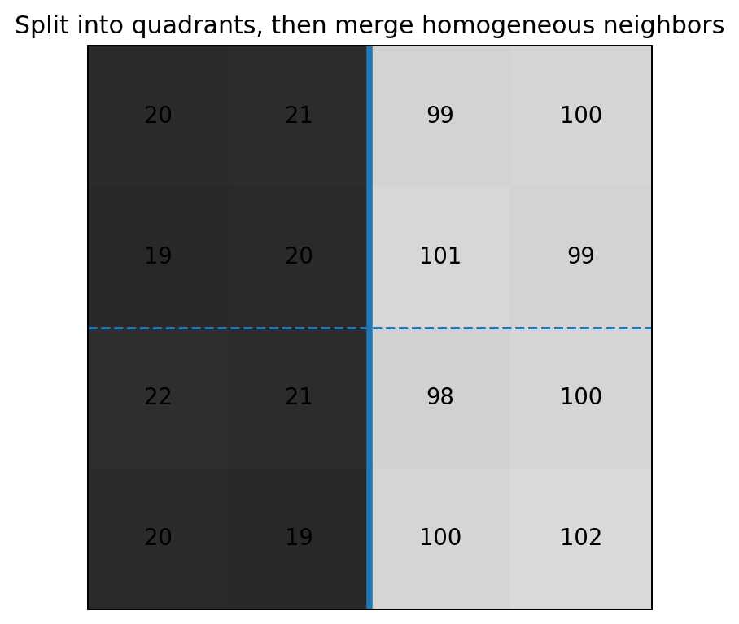
Fig. 46 نمایش اصیل مثال تقسیم به ربعها و ادغام ناحیههای مجاور همگن.#
تصویر کوچک زیر را در نظر بگیرید:
معیار همگنی را به صورت
تعریف میکنیم.
برای کل تصویر:
پس کل تصویر همگن نیست و باید تقسیم شود.
چهار ربع \(2\times2\) به دست میآیند:
دامنهٔ تغییر در این چهار ناحیه به ترتیب \(2,2,3,4\) است؛ پس هر چهار ناحیه به تنهایی همگناند.
اکنون \(R_1\) و \(R_3\) مجاورند. اگر آنها را ادغام کنیم، تمام مقادیر سمت چپ تصویر در بازهٔ
قرار دارند و بنابراین
پس ادغام مجاز است. به همین ترتیب \(R_2\) و \(R_4\) نیز ادغام میشوند، زیرا
اما دو نیمهٔ چپ و راست را نمیتوان ادغام کرد، زیرا
پس نتیجهٔ نهایی دو ناحیه است: ناحیهٔ کمشدت در سمت چپ و ناحیهٔ پرشدت در سمت راست.
خوشهبندی برای قطعهبندی ناحیهای#
میتوان هر پیکسل را به صورت یک بردار ویژگی در نظر گرفت. برای تصویر خاکستری:
برای تصویر رنگی:
میتوان مختصات مکانی را نیز اضافه کرد:
هدف خوشهبندی این است که پیکسلهایی با ویژگیهای مشابه در یک گروه قرار گیرند.
روش K-means#
فرض کنید \(K\) خوشه داشته باشیم. تابع هدف K-means معمولاً به صورت
تعریف میشود، که در آن
مرکز خوشهٔ \(k\) است.
الگوریتم ساده:
\(K\) مرکز اولیه انتخاب کنید.
هر پیکسل را به نزدیکترین مرکز نسبت دهید: $\(L(p)=\arg\min_k\|\mathbf z_p-\boldsymbol{\mu}_k\|^2.\)$
میانگین هر خوشه را دوباره محاسبه کنید.
مراحل 2 و 3 را تا ثابتشدن برچسبها یا کوچکشدن تغییر مراکز تکرار کنید.
برداشت مفهومی
K-means به تنهایی شرط اتصال مکانی را تضمین نمیکند. دو مجموعهٔ دور از هم میتوانند فقط به دلیل شباهت رنگ یا شدت، یک برچسب یکسان دریافت کنند. افزودن مختصات \(x,y\) به بردار ویژگی یا پردازش مؤلفههای متصل بعد از خوشهبندی میتواند این مشکل را کاهش دهد.
سوپرپیکسلها و الگوریتم SLIC#
سوپرپیکسل مجموعهای از پیکسلهای مجاور و مشابه است که به عنوان یک واحد بزرگتر در پردازشهای بعدی استفاده میشود. هدف این نیست که از ابتدا اشیای نهایی تصویر را دقیقاً تشخیص دهیم؛ هدف آن است که تعداد عناصر پردازشی را کاهش دهیم و در عین حال مرزهای اصلی تصویر تا حد زیادی حفظ شوند.
روش SLIC یک نسخهٔ محلی و کارآمد از ایدهٔ K-means است.
فضای ویژگی و فاصله در SLIC#

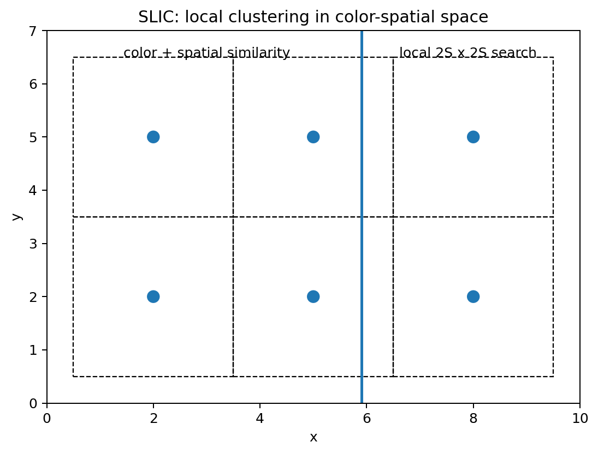
Fig. 47 طرح آموزشی جستوجوی محلی SLIC و نقش همزمان نزدیکی مکانی و شباهت رنگی.#
برای تصویر رنگی معمولاً بردار
در فضای رنگ CIELAB استفاده میشود.
فاصلهٔ رنگی:
و فاصلهٔ مکانی:
اگر تصویر \(N\) پیکسل داشته باشد و حدود \(K\) سوپرپیکسل بخواهیم، فاصلهٔ تقریبی مراکز اولیه برابر است با
برای ترکیب فاصلهٔ رنگی و مکانی میتوان نوشت
پارامتر \(m\) میزان فشردگی سوپرپیکسلها را کنترل میکند. \(m\) بزرگتر، وزن فاصلهٔ مکانی را بیشتر میکند و ناحیهها منظمتر و فشردهتر میشوند. \(m\) کوچکتر اجازه میدهد مرز سوپرپیکسل بیشتر از ساختار رنگی تصویر پیروی کند.
الگوریتم سادهٔ SLIC#
\(K\) مرکز اولیه را تقریباً روی یک شبکه با فاصلهٔ \(S\) قرار دهید.
هر مرکز را در یک همسایگی کوچک به نقطهای با گرادیان کمتر منتقل کنید تا مرکز دقیقاً روی لبه قرار نگیرد.
برای هر مرکز فقط پیکسلهای ناحیهٔ حدود \(2S\times2S\) اطراف آن را بررسی کنید.
فاصلهٔ \(D\) هر پیکسل تا مرکزهای ممکن را محاسبه کنید و پیکسل را به نزدیکترین مرکز نسبت دهید.
مرکز هر خوشه را با میانگین ویژگیهای اعضای آن بهروز کنید.
تا همگرایی تکرار کنید.
در پایان، اتصال مکانی سوپرپیکسلها را کنترل کنید و مؤلفههای بسیار کوچک را به همسایهٔ مناسب متصل کنید.
قطعهبندی مبتنی بر گراف#
در دیدگاه گرافی، تصویر را به یک گراف وزندار تبدیل میکنیم:
هر گره میتواند یک پیکسل یا سوپرپیکسل باشد و یالها ارتباط بین گرههای همسایه را نشان میدهند.
وزن یال باید میزان شباهت دو گره را نشان دهد. یک مثال رایج:
دو پیکسل نزدیک و همشدت وزن بزرگی میگیرند؛ دو پیکسل دور یا با شدت بسیار متفاوت وزن کوچکی خواهند داشت.
برش سادهٔ گراف#
اگر گرهها را به دو مجموعهٔ \(A\) و \(B\) تقسیم کنیم، هزینهٔ برش برابر است با
کمینهکردن صرف این مقدار مشکل دارد: الگوریتم ممکن است یک گرهٔ ضعیفاً متصل را جدا کند و یک برش کمهزینه ولی بیمعنی بسازد.
برش نرمالشده#

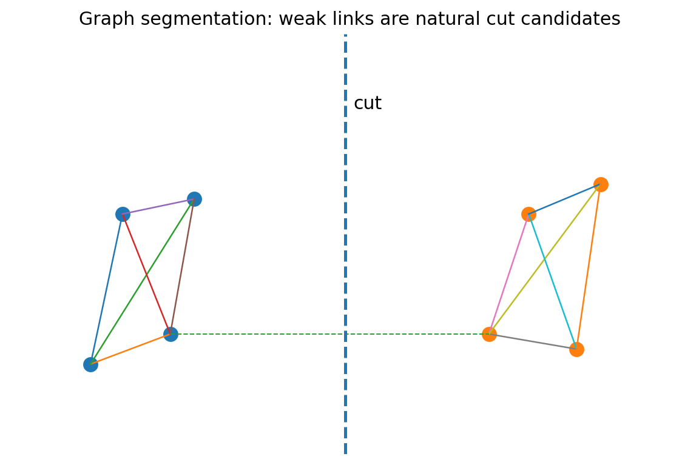
Fig. 48 نمایش سادهٔ گرافی از دو گروه با اتصال داخلی قوی و یال بینگروهی ضعیف؛ ایدۀ برش، جداسازی گروهها با هزینهٔ مناسب است.#
برای جلوگیری از برشهای بسیار نامتوازن، معیار Normalized Cut تعریف میشود.
ابتدا
سپس
هدف آن است که \(\operatorname{Ncut}(A,B)\) کمینه شود.
اگر ماتریس شباهت را با \(W\) و ماتریس قطری درجات را با
نمایش دهیم، تقریب طیفی مسئله به دستگاه مقدار ویژهٔ تعمیمیافته
منجر میشود. بردار ویژهٔ مربوط به دومین مقدار ویژهٔ کوچک برای تقسیم گراف به دو بخش به کار میرود.
قطعهبندی آبخیز#
در روش Watershed تصویر یا یک تابع مشتقشده از آن را به صورت یک سطح توپوگرافی در نظر میگیریم. مختصات \(x,y\) مکاناند و مقدار تابع مانند ارتفاع است. مینیممهای محلی مانند کف درهها هستند.
اگر آب از این مینیممها بالا بیاید، ناحیههایی تشکیل میشوند که Catchment Basin نامیده میشوند. هنگامی که آب دو حوضه در آستانهٔ اتصال قرار گیرد، بین آنها سدی ساخته میشود. این سدها همان خطوط آبخیز و در نتیجه مرزهای قطعهبندی هستند.
چرا معمولاً روی گرادیان اجرا میشود؟#

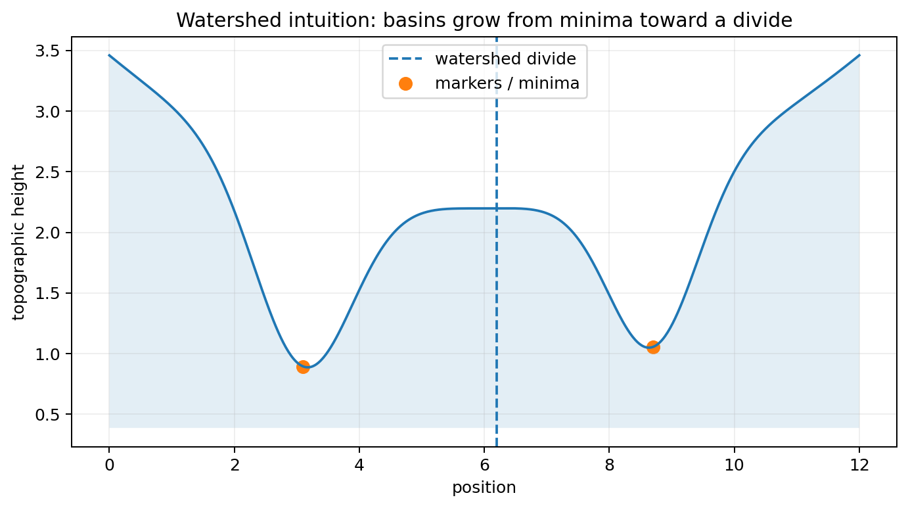
Fig. 49 برداشت توپوگرافی Watershed: حوضهها از مینیممها رشد میکنند و مرز میان حوضههای رقیب به خط آبخیز تبدیل میشود.#
برای تصویر \(f\)، معمولاً یک نقشهٔ ارتفاع از اندازهٔ گرادیان میسازیم:
داخل ناحیههای تقریباً یکنواخت
در حالی که روی مرزهای قوی \(g(x,y)\) بزرگ است. پس ناحیههای داخلی شبیه دره و لبهها شبیه دیوارههای بلند میشوند.
الگوریتم سادهٔ آبخیز کنترلشده با نشانگر#
فرض کنید چند نشانگر
داریم.
تصویر ارتفاع، مثلاً \(g=\|\nabla f\|\)، را محاسبه کنید.
به هر نشانگر یک برچسب متفاوت بدهید.
پیکسلهای همسایهٔ نشانگرها را در یک صف اولویت قرار دهید؛ اولویت برابر ارتفاع \(g(p)\) است.
پیکسلی را که کمترین ارتفاع را دارد از صف خارج کنید.
اگر همسایههای برچسبدار آن فقط یک برچسب داشته باشند، همان برچسب را به پیکسل بدهید.
اگر پیکسل بین دو یا چند ناحیهٔ با برچسب متفاوت قرار گرفته باشد، آن را مرز آبخیز در نظر بگیرید.
همسایههای بررسینشدهٔ پیکسل را وارد صف کنید.
تا خالیشدن صف ادامه دهید.
این الگوریتم را میتوان نوعی رشد رقابتی ناحیهها روی یک سطح ارتفاعی دانست.
بیشقطعهبندی#
اگر تمام مینیممهای محلی به عنوان بذر آبخیز استفاده شوند، نویز میتواند تعداد زیادی مینیمم کوچک ایجاد کند و در نتیجه تصویر به تعداد بسیار زیادی ناحیه شکسته شود. این مشکل را Oversegmentation مینامیم.
راهکار اصلی، استفاده از آبخیز کنترلشده با نشانگر است:
نشانگرها میتوانند با آستانهگذاری، فاصلهٔ اقلیدسی، عملیات مورفولوژیک، دانش قبلی یا تعامل کاربر تولید شوند.
رابطهٔ مفهومی روشهای این فصل#
اگرچه روشهای این فصل ظاهراً متفاوتاند، همگی حول دو ایده میچرخند:
در رشد ناحیه، شباهت مستقیماً هنگام افزودن هر پیکسل آزموده میشود. در تقسیم–ادغام، همگنی یک بلوک یا اتحاد دو بلوک بررسی میشود. در K-means، مجموع فاصله از مراکز خوشهها کمینه میشود. در SLIC، شباهت رنگی و نزدیکی مکانی همزمان دخالت دارند. در روشهای گرافی، شباهت به صورت وزن یالها نمایش داده میشود. در آبخیز، لبههای قوی به صورت موانع توپوگرافی بین حوضهها ظاهر میشوند.
مقایسهٔ روشها#
روش ایدهٔ اصلی مزیت محدودیت اصلی
رشد ناحیه رشد از بذر با استفاده از شباهت و اتصال بسیار قابل فهم و مناسب برای ناحیههای همگن حساس به بذر و امکان نشت تقسیم–ادغام تقسیم بازگشتی بلوکهای ناهمگن و ادغام همسایههای مشابه ساختار منظم و مناسب برای معیارهای آماری ناحیه ممکن است اثر بلوکی ایجاد کند K-means کمینهکردن فاصله از مراکز خوشه ساده و قابل تعمیم به ویژگیهای چندبعدی اتصال مکانی را ذاتاً تضمین نمیکند SLIC خوشهبندی محلی همزمان در فضا و رنگ کاهش شدید تعداد واحدهای پردازشی و حفظ مناسب مرزها خروجی معمولاً مرحلهٔ میانی است Graph Cut / Ncut تقسیم گراف با توجه به وزن شباهت چارچوب ریاضی قوی و استفاده از اطلاعات محلی و جهانی ساخت و حل گراف میتواند پرهزینه باشد Watershed سیلابکردن سطح توپوگرافی از نشانگرها مرزهای متصل و مناسب برای اجسام چسبیده بدون نشانگر مناسب مستعد بیشقطعهبندی است
راهنمای انتخاب روش#
اگر جسم مورد نظر از نظر شدت یا رنگ نسبتاً یکنواخت است و محل تقریبی آن را میدانیم، رشد ناحیه انتخاب طبیعی است. اگر کل تصویر را میخواهیم به بلوکهای همگن تقسیم کنیم و بتوانیم یک گزارهٔ \(Q(R)\) مناسب تعریف کنیم، تقسیم–ادغام مناسب است. اگر فقط ویژگیها مهماند و اتصال مکانی مسئلهٔ اصلی نیست، K-means ساده و مؤثر است. اگر هدف کاهش ابعاد مسئله و حفظ تقریبی مرزهاست، SLIC مفید است. اگر روابط بین پیکسلها و بهینهسازی سراسری اهمیت دارد، روشهای گرافی مناسباند. اگر اجسام چسبیدهاند یا مرزها بهتر است از روی نقشهٔ گرادیان استخراج شوند، آبخیز کنترلشده با نشانگر گزینهٔ مهمی است.
خلاصهٔ فصل#
مفهوم مرکزی قطعهبندی ناحیهای این است که تصویر را به مجموعههایی متصل، مجزا و همگن تقسیم کنیم. در سادهترین شکل:
در رشد ناحیه این تعریف مستقیماً به الگوریتم تبدیل میشود. در تقسیم–ادغام، همگنی با گزارهٔ \(Q(R)\) کنترل میشود. در خوشهبندی، همگنی با فاصله در فضای ویژگی تعریف میشود. در روشهای گرافی، همگنی با وزن یال و هزینهٔ برش نمایش داده میشود. در آبخیز، جدایی ناحیهها از توپولوژی سطح و موانع گرادیانی به دست میآید.
نکتۀ تدریسی
برای تدریس رشد ناحیه، بهتر است ابتدا همان ماتریس \(5\times5\) این فصل روی تخته نوشته شود. یک بذر انتخاب کنید و فقط چهار سؤال را تکرار کنید: آیا پیکسل همسایه است؟ آیا قبلاً بررسی شده است؟ آیا شدت آن شرط شباهت را ارضا میکند؟ اگر پذیرفته شد، همسایههای جدید آن کداماند؟ با چند تکرار، دانشجو بدون نیاز به حفظکردن شبهکد، مکانیزم رشد ناحیه را میبیند.
پرسش کلاسی / امتحانی
چرا شباهت شدت بدون شرط اتصال برای تعریف ناحیه کافی نیست؟
تفاوت مقایسه با شدت بذر و مقایسه با میانگین جاری ناحیه چیست؟
در مثال عددی رشد ناحیه، اگر \(T\) از 3 به 70 افزایش یابد چه اتفاقی میافتد؟
چرا تقسیم صرف میتواند ناحیههای مجاور با خواص مشابه ایجاد کند؟
در K-means چرا افزودن مختصات \(x,y\) میتواند کیفیت قطعهبندی ناحیهای را بهتر کند؟
پارامتر \(m\) در SLIC چه تعادلی ایجاد میکند؟
چرا کمینهکردن سادهٔ \(\operatorname{cut}(A,B)\) ممکن است یک گرهٔ منفرد را جدا کند؟
چرا اجرای مستقیم آبخیز روی یک تصویر نویزی معمولاً باعث بیشقطعهبندی میشود؟
منابع علمی تکمیلی#
R. Adams and L. Bischof, Seeded Region Growing, IEEE Transactions on Pattern Analysis and Machine Intelligence, Vol. 16, No. 6, pp. 641–647, 1994, DOI: 10.1109/34.295913.
R. Achanta, A. Shaji, K. Smith, A. Lucchi, P. Fua, and S. Süsstrunk, SLIC Superpixels Compared to State-of-the-Art Superpixel Methods, IEEE Transactions on Pattern Analysis and Machine Intelligence, Vol. 34, No. 11, pp. 2274–2282, 2012.
J. Shi and J. Malik, Normalized Cuts and Image Segmentation, IEEE Transactions on Pattern Analysis and Machine Intelligence, Vol. 22, No. 8, pp. 888–905, 2000, DOI: 10.1109/34.868688.
Y. Boykov and M.-P. Jolly, Interactive Graph Cuts for Optimal Boundary and Region Segmentation of Objects in N-D Images, ICCV, pp. 105–112, 2001.
L. Vincent and P. Soille, Watersheds in Digital Spaces: An Efficient Algorithm Based on Immersion Simulations, IEEE Transactions on Pattern Analysis and Machine Intelligence, Vol. 13, No. 6, pp. 583–598, 1991.
پیوست: نمایش عددی و هندسی مشتق جهتی و گرادیان#
در این پیوست میخواهیم رابطۀ
را نه فقط به صورت جبری، بلکه روی یک تابع دوبعدی واقعی مشاهده کنیم.
تابع اسکالر زیر را در نظر میگیریم:
این تابع را میتوان مانند یک تصویر پیوسته در نظر گرفت که در هر نقطۀ \((x,y)\) یک مقدار اسکالر دارد. تفاوت فقط در این است که به جای شدت روشنایی، مقدار تابع \(f\) را بررسی میکنیم.
نقطۀ
را انتخاب میکنیم.
مشتقهای جزئی تابع عبارتاند از
پس در \(P_0\) داریم
بنابراین بردار گرادیان برابر است با
اندازۀ گرادیان:
زاویۀ گرادیان نیز
است.
حال یک جهت دلخواه با زاویۀ \(\phi\) تعریف میکنیم:
مشتق جهتی در نقطۀ \(P_0\) برابر است با
پس در این مثال
و در نتیجه
از طرف دیگر چون
داریم
پس مستقیماً مشاهده میکنیم که
اکنون سه حالت مهم روشن میشوند.
اگر
آنگاه
یعنی سریعترین افزایش تابع دقیقاً در جهت گرادیان اتفاق میافتد.
اگر
داریم
یعنی حرکت در راستای عمود بر گرادیان، در مرتبۀ اول مقدار تابع را تغییر نمیدهد. این همان راستای مماس بر منحنی هممقدار است.
و اگر
آنگاه
یعنی بیشترین کاهش تابع در جهت مخالف گرادیان رخ میدهد.
برای نمونه اگر جهت دلخواه را
انتخاب کنیم:
این مقدار از \(M\approx4.4721\) کوچکتر است، زیرا جهت \(20^\circ\) با جهت گرادیان \(\alpha\approx63.435^\circ\) منطبق نیست.

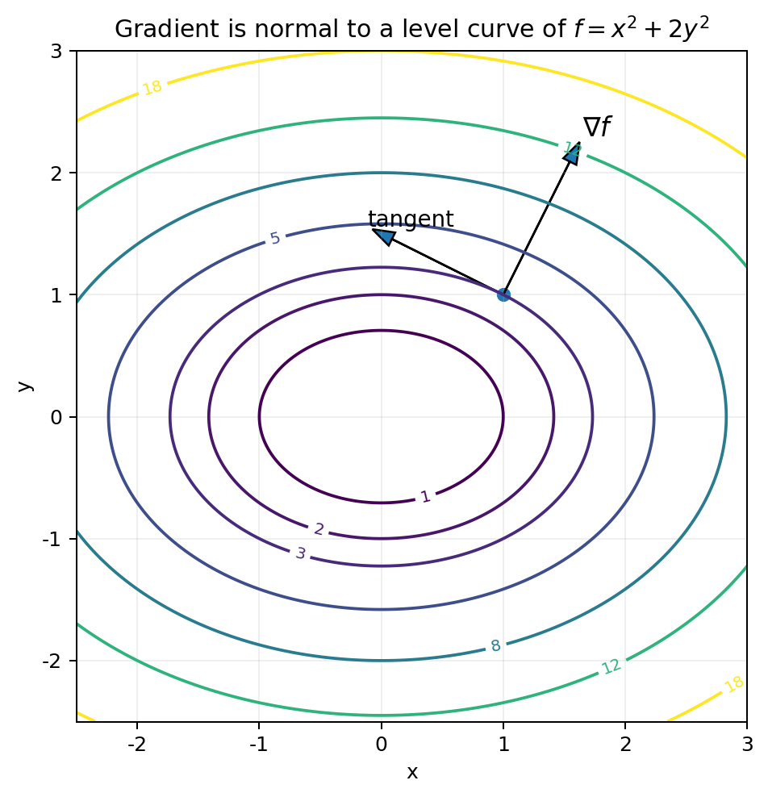
Fig. 50 منحنیهای هممقدار \(f(x,y)=x^2+2y^2\) در کنار بردار گرادیان و مماس. گرادیان بر منحنی هممقدار عمود و در جهت بیشترین افزایش است.#
شکل بالا یک نکتۀ مهم را به صورت هندسی نشان میدهد. منحنیهای رسمشده منحنیهای
هستند. حرکت روی هر یک از این منحنیها مقدار تابع را تغییر نمیدهد. بنابراین مشتق جهتی در راستای مماس بر منحنی صفر است. از سوی دیگر، گرادیان بر همین مماس عمود است.
اکنون مشتق جهتی را برای تمام زوایای
محاسبه میکنیم.

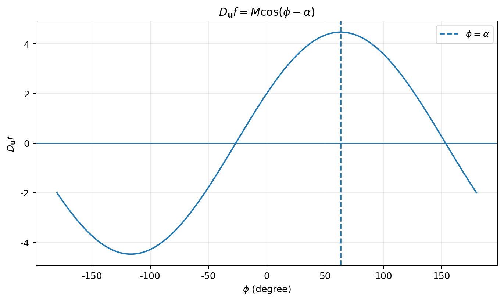
Fig. 51 تغییر مشتق جهتی با زاویۀ \(\phi\). بیشینه در \(\phi=\alpha\)، صفر در جهت عمود بر گرادیان و کمینه در جهت مخالف گرادیان رخ میدهد.#
نمودار دوم به روشنی نشان میدهد که رابطۀ
فقط یک رابطۀ جبری نیست. این رابطه تمام رفتار هندسی تغییر تابع در اطراف نقطه را توصیف میکند:
بنابراین گرادیان هم جهت سریعترین افزایش و هم مقدار آن افزایش را مشخص میکند.
کد بازتولید مثالها#
منطق عددی گرادیان، مشتقهای Sobel، Otsu، رشد ناحیه و نرمالسازی نمایش در فایل اجرایی همراه فصل یکپارچه شده است:
شکلهای هندسی گرادیان این صفحه نیز بهصورت اصیل برای نسخۀ Jupyter Book بازطراحی شدهاند و نسخۀ نهایی آنها در پوشۀ images/ همین بسته قرار دارد.
پرسشهای مرور فصل#
چرا شرط اتصال در تعریف یک ناحیه، مستقل از شباهت شدت، ضروری است؟
تفاوت پاسخ مشتق اول و دوم به یک لبۀ پلهای چیست و این تفاوت در آشکارسازی لبه چه اهمیتی دارد؟
در تبدیل هاف کلاسیک چرا \(\theta\) پیمایش میشود اما \(\rho\) از رابطه محاسبه میشود؟
چرا بردار گرادیان بر امتداد لبه عمود است؟
افزایش \(\sigma\) در LoG چه اثری بر مقیاس ساختارهای آشکارشده و حساسیت به نویز دارد؟
نقش آستانههای پایین و بالای Canny و hysteresis چیست؟
با استفاده از رابطۀ \(\sigma_G^2=\sigma_W^2+\sigma_B^2\) توضیح دهید چرا Otsu میتواند واریانس بینکلاسی را بیشینه کند.
در رشد ناحیه، مقایسۀ پیکسل با مقدار بذر چه تفاوتی با مقایسه با میانگین جاری ناحیه دارد؟
چرا K-means به تنهایی اتصال فضایی را تضمین نمیکند و SLIC چگونه مختصات فضایی را وارد معیار شباهت میکند؟
چرا Watershed بدون marker مناسب مستعد بیشقطعهبندی است؟
منابع تکمیلیِ راستیآزماییشده#
این منابع برای کنترل علمی و تکمیل آموزشی استفاده شدهاند؛ ترتیب فصل از متن پیوستشده حفظ شده است.
R. C. Gonzalez and R. E. Woods, Digital Image Processing, 4th ed., Pearson, 2018. منبع کتابی اصلی فصل.
N. Otsu, “A Threshold Selection Method from Gray-Level Histograms,” IEEE Transactions on Systems, Man, and Cybernetics, 9(1), 62–66, 1979. DOI:
10.1109/TSMC.1979.4310076.J. Canny, “A Computational Approach to Edge Detection,” IEEE TPAMI, 8(6), 679–698, 1986. DOI:
10.1109/TPAMI.1986.4767851.R. Adams and L. Bischof, “Seeded Region Growing,” IEEE TPAMI, 16(6), 641–647, 1994. DOI:
10.1109/34.295913.D. Comaniciu and P. Meer, “Mean Shift: A Robust Approach Toward Feature Space Analysis,” IEEE TPAMI, 24(5), 603–619, 2002. DOI:
10.1109/34.1000236.R. Achanta et al., “SLIC Superpixels Compared to State-of-the-Art Superpixel Methods,” IEEE TPAMI, 34(11), 2274–2282, 2012. DOI:
10.1109/TPAMI.2012.120.J. Shi and J. Malik, “Normalized Cuts and Image Segmentation,” IEEE TPAMI, 22(8), 888–905, 2000. DOI:
10.1109/34.868688.L. Vincent and P. Soille, “Watersheds in Digital Spaces: An Efficient Algorithm Based on Immersion Simulations,” IEEE TPAMI, 13(6), 583–598, 1991. DOI:
10.1109/34.87344.
یادداشت تدوین: شکلهای موجود در این صفحه بازطراحی/تولید شدهاند و تصاویر استخراجشده از صفحات کتاب Gonzalez در بستهٔ انتشار قرار نگرفتهاند.